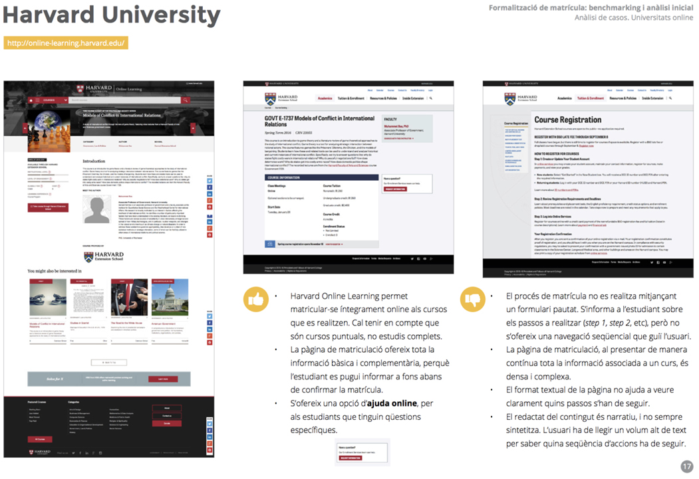

Kit de ferramentas de design
O Design Toolkit BR é a fiel tradução do Design Toolkit de la UOC, (Fundació per a la Universitat Oberta de Catalunya), e esta página web busca oferecer uma ferramenta ágil com conteúdos de UX e UI design para você estudar mais em menos tempo, além de guias associados que expande o conteúdo e fornece orientações específicas para sua execução.
É a caixa de ferramentas de design na forma de planilhas de conteúdo e recursos de aprendizagem. Os conteúdos são apresentados em listas por ordem alfabética no menu lateral, e os classifica de acordo com a sua tipologia, características e atributos. O Design Toolkit BR reúne as ferramentas mais representativas e utilizadas, especialmente aquelas que são trabalhadas ao longo dos diferentes estudos da UOC: no Bacharelado em Design e Criação Digital e, especialmente, no Mestrado Universitário em Design de Interação e Experiência do Usuário (UX).
A utilidade e adequação das ferramentas do toolkit depende de cada projeto em específico, do contexto em que são usadas e do designer que as usa. É por esse motivo que os apresentamos agrupados por tipo e dispostos em ordem alfabética. Convidamos você a explorar a caixa de ferramentas, navegar pelos diferentes métodos, princípios, modelos, tipos de interação, visões e recursos, para se familiarizar com cada uma das ferramentas. Isso tornará mais fácil para você começar a incorporá-los em seus projetos de design.
Pode contactar-nos através de contato@designtoolkitbr.com caso identifique algum erro, falte uma ferramenta ou queira fazer alguma sugestão.
Guia arquitetura da informação
Este guia expande a ficha de Arquitetura da Informação. A arquitetura da informação faz parte da fase de geração, após ter realizado a pesquisa e definição do produto. É construído com base nas informações obtidas nessas duas fases iniciais do projeto, e uma vez definido, conduz à prototipagem. É considerada peça fundamental no processo, pois permite começar a formalizar a proposta de design.
Conceitos fundamentais
Arquitetura da informação é a disciplina dedicada a organizar e rotular informações. Permite determinar a estrutura e a rotulagem dos conteúdos de um produto interativo para que respondam às características e necessidades dos usuários.
Ele se enquadra na fase de geração e é uma fase essencial no processo de desenvolvimento do produto. É desenvolvido após a realização da pesquisa e definição dos requisitos, de forma que as informações extraídas nas fases iniciais sirvam de base para a definição da estrutura e rotulagem do conteúdo.
A organização do conteúdo de um serviço ou produto interativo determina que os usuários tenham fácil acesso (ou não) às informações. Portanto, uma organização adequada é fundamental para garantir uma boa experiência do usuário e que a web seja um sucesso.
Esquemas de informação
Existem diferentes maneiras de estruturar as informações:
- Esquemas exatos: são aqueles que organizam as informações em grupos bem definidos e mutuamente exclusivos. Entre esses esquemas encontramos: ordem alfabética, ordem cronológica ou ordem geográfica, entre outros. Se decidirmos usar a ordem alfabética para classificar, por exemplo, uma lista de nomes de artistas, cada um dos nomes só se encaixará em uma categoria (A, B, C, etc.) com base na letra com que começa.
- Esquemas ambíguos: esquemas para os quais não existe uma definição exata, de modo que o mesmo item pode se enquadrar em várias categorias. Entre esses esquemas, encontramos a organização por temas, por tarefas, por públicos, por metáfora, etc.
Rotulagem
A rotulagem de um produto ou design interativo engloba todos os rótulos (icônicos ou textuais) que são usados para definir os diferentes grupos de informações. Fazer uma seleção adequada de rótulos ajuda a resolver ambigüidades e orientar o usuário, por isso também é considerado um elemento-chave na construção do produto.
Conforme mencionado, existem dois grandes grupos de rótulos:
- Rótulos icônicos: são as imagens ou ícones usados para representar o conteúdo.
- Rótulos textuais: as palavras que são usadas como links no sistema de navegação, títulos de seção, etc. Nessa categoria, você também pode incluir as hashtags que os usuários criam em certas redes sociais (como o Instagram) para classificar as informações
Navegação
O sistema de navegação pode ser definido como uma bússola que permite ao usuário se orientar, saber de onde veio, identificar exatamente onde está e discernir para onde pode ir.
Seu objetivo é, portanto, localizar o usuário, indicar quais conteúdos estão relacionados à tarefa em andamento e também facilitar o acesso a outras unidades de informação. Por isso, é importante definir o melhor local para localizar as opções de navegação e construir as diferentes rotas possíveis para que os usuários atinjam seus objetivos. Assim, terão sempre os elementos necessários para se localizar dentro do produto ou serviço sem nunca chegar a um beco sem saída.
Procurar
Enquanto a navegação é uma tarefa que implica a exploração dos conteúdos pelo usuário, a busca implica que o usuário interroga o sistema para recuperar a informação desejada.
Assim, para encontrar rapidamente as informações de que precisa, o usuário pode ir diretamente ao sistema de busca, principalmente quando a estrutura do conteúdo é complexa. Em alguns casos, a pesquisa substitui a navegação, por isso é importante que a ferramenta de pesquisa seja ágil e eficiente e que forneça os resultados de forma clara e direta.
Estratégia de conteúdo
A estratégia de conteúdo envolve a criação, publicação e gerenciamento de conteúdo para torná-lo útil e utilizável. Defina qual será o conteúdo e sua estrutura, como e quem manterá esse conteúdo e quais diretrizes devem ser seguidas para garantir um estilo consistente.
Preparação
Um projeto pode partir de duas situações diferentes que terão uma influência direta na definição da arquitetura da informação:
- Novo projeto: neste caso, é importante ter clareza sobre os objetivos do projeto e sua definição estratégica. Você também deve investigar quais requisitos existem em termos de conteúdo: Existe conteúdo que é definido pelo cliente? Existem questões legais a serem consideradas? Que outras condições devemos considerar?
- Redesenho: neste caso, o conteúdo pré-existente deve ser analisado para verificar se ele corresponde aos novos objetivos e à definição estratégica do projeto.
Em ambos os casos, a primeira tarefa na definição da arquitetura da informação é realizar um inventário de conteúdo abrangente. No caso de um novo design, o inventário reúne as informações coletadas durante as fases de pesquisa e definição; no caso de um redesenho, se nenhuma pesquisa de usuário tiver sido feita, o inventário reunirá o conteúdo existente e garantirá que não omitamos nenhum conteúdo principal.
Como fazer o inventário? Depende das características do produto, mas em geral é útil utilizar uma tabela com os diferentes níveis de navegação e, se for o caso, o URL correspondente. Assim, esta tabela é preenchida com os conteúdos incluídos em cada nível e, ao final, é possível visualizar a estrutura global do conteúdo, como pode ser visto neste exemplo:

Desenvolvimento / execução
Realizado o inventário, e a partir dele, inicia-se o processo de definição da arquitetura da informação, que permitirá organizar e rotular todo o conteúdo através das seguintes etapas:
- Organização e rotulagem: tanto a estrutura como a rotulagem dos conteúdos devem responder aos objetivos e estratégia do projeto. Por outro lado, é importante envolver os usuários para que a arquitetura final seja baseada em seus modelos mentais e seja o mais intuitiva possível para quem a vai utilizar. Nesse sentido, é altamente recomendável trabalhar com a técnica de classificação de cartas. Por outro lado, é importante ter em mente a natureza do projeto. Se for um projeto novo, a organização e rotulagem dos conteúdos dependerão dos objetivos e da definição estratégica, bem como das informações obtidas na fase de definição do projeto; Se, pelo contrário, é um redesenho, é necessário contrastar o inventário dos conteúdos pré-existentes com a nova definição do projeto para adicionar as modificações que se façam necessárias.
- Definição da estrutura do conteúdo: uma vez que a informação foi organizada e rotulada, deve ser definida uma árvore de conteúdo que permita a definição detalhada da estrutura e rotulagem das diferentes seções:
1 - Quais opções aparecerão nos principais elementos de navegação e em que ordem (principalmente: menu principal, opções adicionais no cabeçalho e opções no rodapé)? 2 - Como o conteúdo será organizado hierarquicamente? (Quais serão os principais? Quais serão incluídos neles e quantos níveis de profundidade a estrutura terá?)
Para representar essa estrutura de conteúdo, um diagrama denominado árvore de conteúdo ou mapa do site é usado. Neste sentido, é importante ter em mente que o mapa do site não é um elemento que deve ser mantido sempre fixo, mas que nele serão realizadas várias iterações para refinar a estrutura o máximo possível para torná-la o mais intuitiva que possível.
- Avaliação da arquitetura: finalmente, é necessário avaliar a árvore de conteúdo resultante com os usuários. Para isso, utiliza-se a técnica de teste de árvore, que permite detectar se a estrutura atende às suas necessidades e é eficaz. Os resultados obtidos na avaliação conduzirão a iterações na estrutura para melhorá-la.Além disso, o processo de avaliação e iteração pode ser realizado várias vezes, se necessário, para otimizar ao máximo os resultados finais.
Análise / resultados
Uma vez realizado esse processo, a arquitetura da informação é materializada em uma árvore de conteúdo, ou mapa do site. A configuração deste depende muito das necessidades dos usuários, mas, além disso, é conveniente levar em consideração duas questões importantes:
- Não deve ser muito profundo: quanto mais níveis de conteúdo houver, mais difícil será para o usuário encontrar o conteúdo que procura.
- Não deve ser excessivamente amplo: quanto mais opções o usuário tiver ao mesmo tempo, mais difícil será para ele tomar uma decisão. Os diferentes menus e submenus não devem conter mais do que sete ou nove opções cada.
Exemplos
Writemaps Slickplan EveryinteractionReferências
Garreta, M.; Mor, E. (2011). «Diseño centrado en el usuario» [en línea]. En: C. Casado; M. Garreta y otros. Interacción persona-ordenador (módulo 3). Barcelona: FUOC. Clique aqui . [Data de consulta: 25 de janeiro de 2021].
IA Institute. «IA Institute Resource Library» [en línea]. Clique aqui . [Data de consulta: 25 de janeiro de 2021].
IA Institute. «We Make Information Clearer» [en línea]. Clique aqui . [Data de consulta: 25 de janeiro de 2021].
Klyn, D. Explaining information architecture [en línea]. Clique aqui . [Data de consulta: 25 de janeiro de 2021].
Monjo, T. (2011). Diseño de interacción. Barcelona: FUOC.
Morville, P.; Rosenfeld, L. Arango, J. (2015) Information Architecture, 4th Edition. O’Reilly.
UX Booth (2015). «Complete Beginner’s Guide to Information Architecture» [en línea]. UX Booth. Clique aqui . [Data de consulta: 25 de janeiro de 2021].
Guia avaliação heurística
A avaliação heurística é uma técnica que faz parte de um processo de design centrado no usuário, na fase de avaliação.
Pode ser realizada durante o processo de design, uma vez que as primeiras propostas tenham sido elaboradas e os primeiros protótipos do sistema tenham sido construídos, pois isso nos permitirá corrigir aspectos de usabilidade antes de desenvolvê-lo totalmente. Também pode ser feito na fase de lançamento, uma vez desenvolvido, para diagnosticar elementos de usabilidade que não eram visíveis nas fases anteriores.
No caso de projetos de redesenho (em que você começa a partir de um projeto pré-existente), é altamente recomendável realizar a avaliação heurística no início do projeto sobre o design do qual você inicia, pois os resultados ajudarão a definir algumas diretrizes para a nova proposta.
Preparação
Prepare ou selecione o checklist de base
A avaliação heurística consiste na avaliação de um produto por um especialista ou grupo de especialistas, de acordo com um conjunto de regras e princípios de design (heurísticas) previamente estabelecidos.
Essas heurísticas podem ser divididas em subheurísticas, que se aprofundam em questões específicas.
Por exemplo, se uma heurística de design de interação é "simplicidade" (o design deve ser o mais simples possível e focado na tarefa), ela pode ser dividida nas seguintes subheurísticas:
- Cada etapa do processo é óbvia para o usuário.
- Os ícones são otimizados para que possam ser facilmente reconhecidos.
- Nenhum ícone semelhante é usado para representar ações diferentes.
As subheurísticas, portanto, permitem que questões específicas sejam avaliadas para identificar erros ou problemas de projeto.
A primeira tarefa do avaliador será, portanto, reunir a lista de heurísticas e subheurísticas que deseja avaliar em formato de checklist , para indicar facilmente quais estão cumpridas e quais não.
Cada disciplina tem sua própria heurística (as de design de interface serão diferentes, por exemplo, das de design automotivo) e, portanto, a lista de verificação resultante em cada caso será diferente. Em alguns casos, já existem checklists elaborados, que o especialista pode utilizar como recurso básico para adaptar e preparar o que for mais adequado para cada projeto.
Desenvolvimento / execução
Avaliação do design
A avaliação do projeto é feita individualmente por cada especialista. Antes de começar, o especialista deve examinar atentamente o projeto para se familiarizar com ele.
O especialista então inspeciona o projeto seguindo o checklist , que deve permitir que ele indique quais subheurísticas são atendidas e quais não são, indicando o grau de gravidade do problema a partir de três parâmetros:
- Com que frequência o problema ocorre: é comum ou não?
- O impacto do problema: os usuários podem superá-lo facilmente ou não?
- A persistência do problema: é resolvido imediatamente ou reaparece com o uso?
Compartilhar os resultados da inspeção
Se a avaliação foi realizada por mais de um especialista, é aconselhável compartilhar os resultados. Se houver diferenças no grau de gravidade avaliado em qualquer um dos problemas, é um bom momento para discuti-lo.
Análise / resultados
A análise dos resultados é realizada em duas dimensões:
- Quantitativo: coleta de dados sobre os problemas detectados e sua gravidade. Eles podem ser representados graficamente, para um melhor entendimento.
- Qualitativo: os problemas são descritos em ordem de prioridade (os mais graves primeiro) e as recomendações sobre a solução estão associadas a eles. Essas conclusões podem ser redigidas na forma de lista executiva e aplicável.
Exemplos
Para a avaliação de designs web, existem alguns checklists disponíveis na rede:
- Por exemplo, UX Check é uma extensão do Chrome que permite identificar problemas em um site e baixar o relatório, tudo online.
Existem também outros checklists de formatos editáveis, como:
- Checklist IXD
- Sirius
Referências
Carreras, O. «Padrões formais de usabilidade e sua aplicação prática em uma avaliação heurística». Utilizável e acessível. Blog. Clique aqui [Data da consulta: 25 de janeiro de 2021].
Galinus . "Princípios do design de interação de Bruce Tognazzini." Clique aqui [Data da consulta: 25 de janeiro de 2021].
Nielsen, J. «10 Heuristics for User Interface Design». Nielsen Norman Group. Clique aqui [Data da consulta: 25 de janeiro de 2021].
Zapata, M. «Métodos de avaliação sem usuários». Clique aqui
Guia benchmarking
O benchmarking é feito nos estágios iniciais de um projeto, para conhecer as características do produto de nossos concorrentes ou outros produtos não necessariamente de concorrentes, para aprender como resolver problemas.
Este método pode ser repetido em diferentes momentos do projeto, para analisar questões específicas, como a aparência visual dos produtos comparados.
Preparação
Selecionar os produtos para analisar
O primeiro passo é escolher os produtos a serem analisados. Podem ser concorrentes do nosso produto, mas também podem ser produtos que contenham funcionalidades ou que tenham objetivos semelhantes aos do projeto que estamos a desenhar.
Recomenda-se analisar entre 5 e 7 produtos, para ter uma visão ampla, sem dedicar tempo excessivo à revisão de questões que, com mais produtos, poderiam se repetir.
Definir os critérios de análise
Para alcançar resultados relevantes, é necessário definir os critérios a serem seguidos levando em consideração os objetivos específicos da análise.
Os critérios podem ser gerais ou específicos. Por exemplo, a análise do conteúdo, o design ou a navegação de um site seriam critérios gerais. Como a pesquisa foi resolvida, o menu principal ou o processo de pagamento seria específico.
É altamente recomendável reunir esses critérios em uma tabela em que cada critério ocupe uma linha, com os produtos analisados em colunas. A tabela deve permitir a inclusão de anotações.
Desenvolvimento / execução
Uma vez que os produtos e critérios foram selecionados, a tarefa de análise começa.
É preciso observar cada um dos produtos como se fossem usados pela primeira vez e ser meticuloso, focando principalmente nos critérios estabelecidos.
Ambos os pontos fortes (boas práticas) e pontos fracos (problemas a serem evitados) são observados. Quaisquer outras questões relevantes para o projeto também podem ser observadas.
É importante realizar um registro gráfico dos produtos analisados: se forem produtos físicos, podem ser tiradas fotografias dos detalhes analisados; se forem produtos digitais (sites ou aplicativos ), é muito apropriado fazer capturas de tela dos exemplos mais notáveis.
Análise / resultados
Após a análise, as anotações são revisadas para tirar conclusões aplicáveis ao projeto. Toda a documentação gerada é reunida em um relatório que deve incluir:
- A lista de produtos analisados, se possível com suas referências (por exemplo, se o produto tiver um site associado, incluiremos a URL).
- Os critérios usados na análise.
- A análise específica de cada um dos produtos, com as respectivas anotações e imagens.
- Um resumo geral da análise, reunindo os pontos fortes e fracos e as notas mais destacadas. Este resumo pode incluir a tabela de critérios / produtos, com uma classificação de 0 se não atender e 10 se atender o critério de forma ideal, e toda a faixa intermediária. Uma classificação simples de 0/1 (não compatível / compatível) também pode ser usada.
- Um sumário executivo, em forma de lista, que sintetiza as conclusões mais relevantes e diretamente aplicáveis ao projeto, acompanhado de recomendações de desenho.
Exemplos
Modelo de tabela de análise geral
Exemplo de uma página de análise de produto
Exemplo de uma página de análise de produto
Fonte Clique aqui
Exemplo de tabela de análise geral
Fonte Clique aqui
Referências
Buley, L. (2013). A equipe de experiência do usuário de um só: um guia de sobrevivência de pesquisa e design . Nova York: Rosenfeld Media.
Danforth Media. "Conduzindo uma Análise Competitiva de UX Sólida." Clique aqui [Data da consulta: 25 de janeiro de 2021].
Hanington, B.; Martin, B. (2012). Métodos universais de design: 100 maneiras de pesquisar problemas complexos, desenvolver idéias inovadoras e soluções eficazes de design . Rockport.
Ronda León, R. «User Experience Design: etapas, atividades, técnicas e ferramentas». Não apenas usabilidade. Clique aqui [Data da consulta: 25 de janeiro de 2021].
Travis, D. "The Beginners 'Guide to Benchmarking User Experience." Clique aqui [Data da consulta: 25 de janeiro de 2021].
Withrow, J. (2006, 27 de fevereiro) “Competitive Analysis: Understanding the Market Context”. Caixas e setas. Clique aqui [Data da visita: 25 de janeiro de 2021].
Guia card sorting
O card sorting permite que os usuários analisem e estruturem o conteúdo para definir a arquitetura da informação com base em seus modelos mentais.
Esta técnica, por um lado, ajuda a descobrir a melhor forma de organizar a informação e, por outro, permite definir os rótulos do produto ou serviço interativo. Sua implementação é rápida e econômica e os benefícios são óbvios: garante uma arquitetura de informação baseada nas expectativas do usuário, o que facilita a localização do que procura ao utilizar o produto.
Preparação
O primeiro passo para fazer uma triagem de cartões é fazer um inventário de todos os conteúdos que irão incluir o produto com base nas informações obtidas na modelagem (pessoas e cenários) e também com base nos requisitos do negócio.
Aqui estão algumas decisões importantes a serem tomadas:
- Card sorting fechado ou aberto: o primeiro permite classificar as informações com base nas categorias existentes e, no segundo, os usuários devem agrupar as informações sem categorias predefinidas. Nesse sentido, e se tratando de um novo produto ou serviço, é comum fazer uma triagem de cartão aberto para analisar como os usuários organizariam as informações; se você tem uma estrutura definida, pode realizar uma segunda rodada de escaneamento (se necessário) fazendo uma classificação fechada de cartas com base nas categorias identificadas em primeiro lugar. Se for um produto ou serviço existente ao qual você deseja adicionar conteúdo, é comum fazer uma classificação de cartão.
- Seleção e recrutamento de participantes: os participantes devem ser recrutados levando-se em consideração o perfil das pessoas a quem o produto é dirigido. Para que a classificação das cartas dê resultados representativos, o ideal é fazer o teste com várias pessoas, até no máximo quinze (a partir desse número, os resultados começam a se repetir).
- Card sorting pessoalmente ou online: dependendo da disponibilidade dos participantes, o teste pode ser feito pessoalmente (individualmente ou em grupos de até três pessoas) ou remotamente por meio de ferramenta digital.
Além disso, é necessário preparar os cartões que serão utilizados durante a sessão. Para isso, movemos cada um dos itens identificados durante o inventário de conteúdo em um cartão do tipo nota adesiva (se a triagem do cartão for face a face) ou digital (se o teste for feito online). O número total de cartões varia conforme o produto ou serviço (o ideal é ter no máximo 30 a 40 cartões).
Desenvolvimento / execução
O teste é realizado conforme descrito abaixo:
- Introdução e explicação: é feita a introdução e explicação da dinâmica da sessão.
- Entrega do cartão: os cartões são entregues aos participantes, que devem:
- Organizá-los: o observador pede aos participantes que os agrupem da maneira que fizer mais sentido para eles. É importante observar que eles não precisam fazer isso rapidamente, mas podem levar o tempo que quiserem até construir a estrutura que considerarem mais apropriada.
- Rotulá-los: uma vez que os cartões são agrupados em categorias, é necessário tratar de sua rotulagem. Se a ordenação das cartas estiver encerrada, o dirigente da sessão pode pedir aos participantes que avaliem os títulos de cada grupo e, se o julgarem adequado, propor um termo diferente (o mesmo para cada uma das cartas); se a classificação de cartas estiver aberta, entregue-lhes cartões em branco para que possam escrever o título que melhor se adequa a cada um dos grupos que criaram.
- Coleta de dados: é importante observar as respostas dos participantes durante e após a sessão:
- Durante a sessão, recomenda-se observar as reações dos usuários e anotar os comentários mais significativos (no caso de sessões individuais, é muito útil pedir-lhes que “pensem em voz alta” ao ordenar a informação). Por outro lado, quando os participantes fizeram a classificação, é muito útil perguntar por que eles classificaram ou rotularam as informações da maneira como o fizeram (suas respostas podem nos ajudar a entender o modelo mental subjacente).
- Assim que o teste for concluído, as categorizações e marcas resultantes serão analisadas.
- Duração da sessão: é comum que o card sorting dure cerca de 60 minutos.
Análise / resultados
Quando todos os testes foram feitos, é hora de analisar os dados para tirar conclusões e poder definir a árvore de conteúdo do produto.
Primeiro, é necessário analisar os dados quantitativos. Se a classificação dos cartões foi feita por meio de uma plataforma online, esse tipo de ferramenta geralmente facilita a análise usando matrizes de similaridade ou dendrogramas; se, por outro lado, os testes foram feitos pessoalmente, é necessário analisar detalhadamente os grupos resultantes para identificar as categorizações e rótulos que se repetem e transferir essas informações com as conclusões para uma ficha (pode ser coletada, por exemplo, em um documento Excel).
Por fim, após a análise quantitativa, é necessário abordar a análise do retorno qualitativo coletado durante o trabalho de campo: comentários, reações, observações, etc. A combinação dos dois tipos de dados maximizará as conclusões e será possível definir uma arquitetura de informação adequada ao modelo mental dos usuários.
Exemplos
Icons8 Blog RosenfeldReferências
Hudson, W. “Card Sorting” [artigo online]. R: M. Soegaard; RF Dam. A enciclopédia da interação humano-computador (2ª ed.). Fundação de Design de Interação. Clique aqui [Data da consulta: 25 de janeiro de 2021].
Mozyrko, B. (2015). «Seleção de cartas: um guia rápido e sujo para iniciantes». Geek de usabilidade. Clique aqui [Data da consulta: 25 de janeiro de 2021].
Sherwin, K. (2018). "Card Sorting: descubra os modelos mentais dos usuários para uma melhor arquitetura da informação". Nielsen Norman Group. Clique aqui [Data da consulta: 25 de janeiro de 2021].
Sinyakov, S. (2013). «A classificação de cartões pode melhorar a usabilidade de seus designs?» [artigo online]. Design Instruct. Clique aqui [Data da consulta: 25 de janeiro de 2021].
Usabilidade.gov . “Card Sorting” [artigo online]. Clique aqui [Data da consulta: 25 de janeiro de 2021].
Guia cenários
A técnica de modelagem conhecida como cenários faz parte dos estágios iniciais de desenvolvimento do produto (pesquisa e definição). Os dados extraídos da pesquisa são utilizados para realizar o método de personas e, a partir dos arquétipos do usuário identificados com esse método, são desenvolvidos os cenários.
Lene Nielsen afirma que o método das personas adquire valor no momento em que os arquétipos identificados aparecem em um palco e utilizam o produto. Nesse sentido, criar um cenário consiste em descrever uma situação de forma narrativa e sequencial, explicando como um usuário interage com o produto para atingir um objetivo específico ou para realizar uma tarefa específica. Os cenários incluem detalhes dessa experiência do usuário e são sempre elaborados do ponto de vista do usuário (com base em suas características, necessidades e motivações).
É importante diferenciar cenários de casos de uso. Os casos de uso incluem uma descrição detalhada das funcionalidades do produto ou serviço em que é destacado como o sistema reage às ações dos usuários. Os cenários, por outro lado, descrevem a interação do ponto de vista do usuário para detectar quais funcionalidades incluir para atender às suas necessidades.
Portanto, o método de cenários permite responder à pergunta “o quê?”: O que o produto deve fazer e quais recursos ele deve incluir para atender aos objetivos das pessoas que o usarão? Além disso, essa técnica também permite:
- Sempre mantenha o usuário no centro do processo de design.
- Explore o contexto de uso do produto.
- Formalize e compartilhe expectativas e ideias.
Preparação
O material necessário para criar os cenários é:
- Os dados extraídos da pesquisa de contexto realizada.
- Os arquivos pessoais que descrevem diferentes aspectos dos perfis de usuário identificados: objetivos, necessidades, expectativas, histórico , experiência, etc.
Desenvolvimento / execução
Criar um cenário envolve dar vida aos arquétipos identificados no método de personas, fazendo-os usar o sistema para analisar a interação e extrair os requisitos do produto. Isso é conseguido através da elaboração de uma história que reflita uma situação de uso e que deve conter, como qualquer história, os seguintes elementos narrativos:
- Abordagem: a história começa apresentando a ação. Descreve o objetivo que o usuário deseja alcançar com o produto, que inclui informações contextuais e todos os dados do perfil que podem influenciar a ação (conhecimento prévio, nível de uso, problemas a serem superados, etc.).
- Ação: uma vez que a ação foi considerada, é hora de descrever como a interação do usuário com o produto se desenvolve. É importante explicar em detalhes as ações que você realiza para atingir seu objetivo, os obstáculos que você encontra e também o retorno que você obtém do produto com cada ação.
- Resultado: é necessário explicar o resultado da história incluindo o que a pessoa alcança ao realizar a interação e as consequências que esse resultado tem para ela ou para a pessoa.
- Contexto: o contexto é um elemento transversal que atravessa a história do início ao fim. É importante considerar todos os aspectos que podem ter um impacto significativo na interação entre o usuário e o sistema: a situação em que você usa o produto, a hora, o local onde ele está e assim por diante.
Antes de finalizar os cenários, é importante iterar a proposta para revisar se os objetivos e motivações do usuário estão claros, se todos os detalhes da ação são realizados, se o contexto está bem definido, etc.
Análise / resultados
Os cenários permitem:
- Conheça melhor os usuários explorando seu contexto de uso, tenha empatia com sua perspectiva e saiba como eles usarão o produto.
- Colete insights que ajudam a identificar os requisitos do produto.
- Projete uma solução que atenda às expectativas do usuário. Como Lene Nielsen argumenta, a dimensão criativa dos cenários estimula a geração de ideias de design.
Além disso, os cenários estimulam a comunicação entre os diferentes membros da equipe e estimulam o alinhamento na visão sobre o produto que as equipes possuem.
No entanto, não se deve perder de vista que os cenários podem criar a falsa impressão de que todas as situações foram consideradas (Lene Nielsen). Além disso, não são um material estático, mas é necessário iterá-los diante de mudanças em qualquer uma das variáveis envolvidas no design: o conhecimento que temos dos usuários, os objetivos do negócio, o contexto geral, etc.
Exemplos
Questionable Methods Uiaccess Pinterest MuzliCenários - UX Knowledge Base Sketch # 16. Fonte: Krisztina Szerovay. Clique aqui
Referências
Carroll, JM (1995). Projeto baseado em cenários: prevendo o trabalho e a tecnologia no desenvolvimento de sistemas . John M. Carroll.
Cooper, A.; Reimann, R.; Cronin, D., et al. (2014). Sobre o rosto: os fundamentos do design de interação . John Wiley & Sons.
Hanington, B.; Martin, B. (2012). Métodos universais de design: 100 maneiras de pesquisar problemas complexos, desenvolver ideias inovadoras e projetar soluções eficazes . Rockport Publishers.
Nielsen, L. Personas . Clique aqui [Data da consulta: 25 de janeiro de 2021].
Patton, J.; Economy, P. (2014). Mapeamento da história do usuário: descubra toda a história, crie o produto certo . O'Reilly Media, Inc.
Guia diagrama de fluxo
O diagrama de fluxo é um método de design centrado no usuário inscrito nas fases de definição e geração que permite representar cada uma das etapas da interação do usuário até atingir seu objetivo.
Essa técnica é baseada em informações que foram tratadas anteriormente em cenários e user journeys e representa mais uma etapa na definição do design. Na fase de modelagem, os cenários nos ajudam a descrever de forma narrativa como um usuário usa o produto ou serviço e nos ajudam a responder à pergunta "o quê?": O que o produto ou serviço deve fazer e quais funcionalidades ele deve incluir? para tornar mais fácil para os usuários atingirem seus objetivos? Com base nessas informações, desenvolvemos user journeys incorporando as expectativas, emoções e nível de satisfação do usuário em cada etapa da interação. Essa técnica nos ajuda a entender melhor o contexto, detectar fragilidades na interação e também oportunidades de melhorias.
Tomando como ponto de partida todas as informações obtidas em cenários e user journeys , os diagramas visam definir e analisar detalhadamente a interação com a representação de todas as opções possíveis que um usuário encontra ao realizar uma tarefa. Portanto, fazer diagramas de fluxo permite:
- Visualize as páginas ou o conteúdo com o qual o usuário interage e as ações necessárias para atingir seu objetivo.
- Entenda de onde vem o usuário e qual será seu próximo destino.
- Identifique becos sem saída, ações que requerem retorno e possíveis erros na lógica da interação.
Por outro lado, dependendo do tipo de interação, os diagramas de fluxo podem representar:
- Fluxos de tarefas: fluxos que são exclusivos para todos os usuários e, portanto, serão feitos da mesma forma, como o registro em um aplicativo. Neste tipo de fluxo é necessário analisar a interação e determinar a melhor navegação. Seguindo o exemplo de registro em um aplicativo, não podemos estendê-lo em muitas etapas ou campos de formulário, mas devemos encontrar o equilíbrio ideal entre as informações de que precisamos e o tempo que os usuários estão dispostos a gastar ali.
- Fluxos de usuário: fluxos não fechados que representam a interação de um usuário específico. Eles não são únicos ou lineares, mas cada pessoa traça um caminho ao longo do produto ou serviço, como procurar um produto em uma loja online. Neste caso é necessário analisar todas as rotas possíveis e tentar otimizar a experiência.
O objetivo dos diagramas de fluxo é, portanto, analisar detalhadamente os percursos mais importantes do produto ou serviço para otimizá-los, e também comunicar ao restante da equipe como a interação deve ser desenvolvida.
Preparação
Antes da elaboração dos diagramas, é necessário levar em consideração, por um lado, as informações que eles representarão e, por outro lado, os elementos visuais que utilizaremos para desenhá-los.
Quanto às informações, é muito útil ter feito a modelagem ( personas e cenários), e também as user journeys (ou outros métodos, como o storyboard ou casos de uso) e a árvore de conteúdo do produto ou serviço.
Em relação à representação visual dos diagramas, recomenda-se seguir o padrão de formas e cores definidas a seguir:
Fonte: Clique aqui
Embora não haja um padrão fechado sobre a aparência dos diagramas, o uso desses formulários se espalhou e, como permitem que a interação seja representada de forma relativamente rápida, são comumente usados neste efeito. No entanto, existem outros formatos que podem ser considerados dependendo das características do produto ou serviço.
Desenvolvimento / execução
Para desenvolver diagramas, recomenda-se seguir o seguinte processo:
1° - Defina o ponto de partida e o ponto final da interação: defina como começa a interação do usuário com o produto ou serviço e seja claro sobre seu objetivo final (sempre com base na modelagem de personas e cenários).
Por exemplo: ponto de partida = abrir o aplicativo; objetivo = pedir comida em casa.
2° - Determine a sequência de etapas. Dependendo da estrutura da árvore de conteúdo, defina a sequência de etapas de interação do usuário do início ao fim.
Por exemplo, faça login > menus disponíveis> menu de detalhes x > seleção de menu x > Digite o endereço> pagamento> confirmação.
3° - Aplique as seguintes perguntas para cada uma das etapas identificadas:
- o que acontece antes desta etapa?
- o que acontece depois?
- esta etapa é uma ação direta ou o usuário precisa tomar uma decisão?
- é necessária alguma ação para dar o próximo passo?
- e se as coisas não correrem como deveriam?
- são necessários caminhos alternativos?
Neste ponto, o objetivo é identificar quais etapas da interação envolvem a decisão do usuário de considerar todos os caminhos possíveis.
4° - “Desenhe” o diagrama com todas as informações definidas nos três passos anteriores, crie o diagrama seguindo o padrão de formulários descrito na seção “Preparação”.
Análise / resultados
Uma vez que os diagramas tenham sido elaborados, é necessário analisar os resultados levando em consideração que eles permitem:
- Detecte possíveis erros antes de prosseguir com o desenvolvimento do produto ou serviço.
- Identifique cada etapa da interação para analisar de onde vem e para onde vai o usuário, de forma que as necessidades dos usuários sejam sempre levadas em consideração e que a interação faça sentido.
Execute iterações rápidas durante o processo de design ou desenvolvimento.
Exemplos
Fonte: Clique aqui
Fonte: Clique aqui
Fonte: elaboração própria
Referências
Baskanderi, N. (2017). «Glossário UX: fluxos de tarefas, fluxos de usuários, fluxogramas e algumas coisas novas». Clique aqui [Data da consulta: 25 de janeiro de 2021].
Handley, A. (2018). "O fluxo do usuário é o novo wireframe". Clique aqui [Data da consulta: 25 de janeiro de 2021].
Hanington, B.; Martin, B. (2012). Métodos universais de design: 100 maneiras de pesquisar problemas complexos, desenvolver ideias inovadoras e projetar soluções eficazes . Rockport Publishers.
Guia experience map
Experience map representa visualmente uma experiência completa (do início ao fim). Descreve as etapas e os passos que um usuário percorre para atingir uma meta, além de expressar o que pensa e sente ao longo dessa jornada. Os eventos são representados cronologicamente em diferentes fases.
O experience map integra quatro componentes fundamentais:
- Fases: correspondem às diferentes etapas pelas quais o usuário passa para atingir seu objetivo.
- Ações: são as atividades específicas que o usuário realiza em cada uma das fases.
- Pensamentos: são as ideias que o usuário forma na mente para realizá-las ou aquelas de que necessita para passar uma fase ou para realizar uma determinada ação.
- Emoções: correspondem às reações do usuário a cada uma das fases ou ao realizar uma determinada ação.
Essa ferramenta também nos ajudará a:
- Compreender uma experiência como um todo.
- Identificar o comportamento de um usuário desde o início da experiência até que ele alcance seu objetivo.
- Identificar os pontos problemáticos dos usuários.
- Identificar oportunidades não atendidas e opções alternativas para oferecer ao usuário.
Preparação
Antes de moldar um experience map, você deve primeiro refletir sobre a experiência. Para isso, devemos nos esforçar para entender as diferentes fases pelas quais passa o usuário, sem nos focar ou nos limitar a um único produto ou tipo de usuário. Trata-se de descrever uma experiência genérica, aplicável a uma diversidade de usuários.
Portanto, é recomendável começar fazendo um ou mais esboços à mão livre (sketches) do futuro experience map em uma escala muito global, ou seja, sem entrar em detalhes sobre os pensamentos e emoções do usuário. É apenas uma questão de descobrir por quais fases o usuário passa e quais ações ele realiza em cada caso.
Os esboços permitem ensaiar ideias e retrabalhá-las rapidamente. Para prepará-los basta papel e lápis ou material de desenho. Também é aconselhável ter postagens para adicionar notas.
Desenvolvimento / execução
Uma vez que a análise de alto nível foi feita usando os esboços, é hora de moldar o experience map. Estamos trabalhando em um diagrama de colunas e linhas:
- As colunas, que geralmente correspondem às fases pelas quais o usuário passa, são subdivididas em ações.
- As linhas servem para descrever essas ações, além de incluir os pensamentos e emoções que o usuário vivencia em cada fase.
Para construir o experience map, é recomendado seguir estas etapas:
1ª - Defina como título a meta a ser representada.
2ª - Identifique as fases da experiência a serem descritas e atribua-lhes uma coluna. Elas devem estar em ordem e seguir uma seqüência de tempo.
3ª - Faça uma lista das ações incluídas em cada uma das fases e coloque-as em ordem nas colunas correspondentes.
4ª - Uma vez definidas as ações, pode-se analisar se o usuário deve tomar alguma decisão ao longo do processo. No experience map podemos presumir uma seleção possível ou diversificá-la com vários ramos. Por exemplo, para comprar um ingresso para um museu, o usuário pode escolher entre usar a internet ou comprá-lo na bilheteria.
5ª - Sempre defina o início e o fim do experience map (onde começamos e quando concluímos a tarefa ou objetivo).
6ª - Reflita, em cada fase ou ação, os pensamentos do usuário (normalmente, o experience map inclui uma linha de pensamentos, que é dividida nas colunas correspondentes).
7ª - Identifique, para cada fase ou ação, quais emoções o usuário experimenta (normalmente, o experience map inclui uma linha para emoções, que é dividida nas colunas correspondentes).
8ª - Apresente o trabalho a um colega para ver como ele o lê e para determinar se está tudo claro.
Análise / resultados
Um bom experience map reflete as ações, pensamentos e emoções de um usuário genérico em cada uma das fases necessárias para atingir um determinado objetivo. É um excelente documento para nos ajudar a entender o cenário em que ocorrem as ações do usuário, bem como para identificar oportunidades de melhoria de um serviço ou de criação de novos produtos.
O experience map é uma ferramenta que pode ser utilizada como base para a geração de user journeys , ou seja, representações mais específicas do itinerário que segue um determinado perfil de usuário para atingir um objetivo utilizando um produto ou serviço determinado.
Exemplos
Experience map. Trem da Europa (por Adaptive Path ). Fonte: Clique aqui
A figura acima mostra um experience map sobre a experiência de uma pessoa em um trem na Europa. As colunas incluem as fases pelas quais o usuário passa para usar um trem e as linhas coletam a descrição das ações, bem como o que o usuário pensa, sente e experimenta em cada fase.
Referências
Adaptive Path (2013). "Guia do Adaptive Path para Mapeamento de Experiência".
Nielsen Norman Group (2017). "Métodos de mapeamento UX comparados: uma folha de dicas." Clique aqui [Data da consulta: 25 de janeiro de 2021].
Guia mapa conceitual
A abordagem dos mapas conceituais como método foi desenvolvida por Joseph Novak, que buscou uma nova ferramenta para descrever a evolução do conhecimento adquirido pelas crianças. Novak ensinou seus alunos a criar representações visuais para mostrar seu conhecimento de questões de abordagem, como “O que é água?”. Os mapas conceituais nos permitem capturar visualmente os conceitos adquiridos e a forma como os assimilamos nas estruturas cognitivas existentes.
Os mapas conceituais apresentam uma estrutura proposicional na qual conceitos interconectados enunciam unidades de significado por meio de proposições. Para fazer isso, esse tipo de diagrama possui uma estrutura hierárquica em que os conceitos mais gerais estão na parte superior do mapa e os mais específicos na parte inferior. A leitura é feita de cima para baixo. Os mapas conceituais são compostos dos seguintes componentes:
Conceitos
Os conceitos são definidos como “padrões em objetos ou eventos” e são representados em figuras geométricas no diagrama. Cada conceito representado no mapa conceitual é relevante para explicar o significado do conceito de hierarquia superior. Devem ser apresentados de forma organizada e hierárquica, para que haja relações apenas entre os mais relevantes, de forma a poder explicar de forma clara e concisa o conceito principal.
Linhas de conexão e palavras de link
Em um mapa conceitual, as linhas de conexão não são suficientes para determinar a relação que existe entre os conceitos. Essas linhas são acompanhadas por palavras de ligação que conectam elementos e especificam a relação entre os conceitos. Eles geralmente são concisos e contêm um verbo.
Proposições
É fomentada pela união de vários conceitos ou termos que se relacionam, por meio de palavras de ligação.
Links cruzados
Links cruzados são relacionamentos entre conceitos que pertencem a diferentes proposições no mapa conceitual, permitindo que você visualize como as ideias se conectam em diferentes domínios. Esses tipos de links estimulam a criatividade e a descoberta de relacionamentos e novas ideias ou conclusões que de outra forma não apareceriam.
Preparação
O mapa conceitual é desenvolvido a partir de uma pergunta que foca na definição do problema que queremos explicar ou resolver. Identifique o tópico e a questão de abordagem a serem desenvolvidos. O próximo passo na preparação é identificar os conceitos-chave associados à ideia principal e gerar uma lista com eles (essa lista é chamada de “estacionamento”). Eles devem ser classificados por categorias, do conceito mais geral ao mais específico, e descrever cada conceito o mais brevemente possível.
Selecione um meio para desenhar. Você precisa ter um canva (em papel ou digital) para trabalhar e ter espaço suficiente para adicionar as informações.
Desenvolvimento / execução
Aqui estão as etapas básicas para criar um mapa conceitual:
1ª - Coloque a palavra que identifica a ideia principal no topo do mapa. Hierarquicamente, essa palavra está localizada no topo do mapa conceitual e atua como um ponto de origem.
2ª - Localize no mapa os diferentes conceitos categorizados desde o ponto de partida, na parte superior, até os mais específicos na parte inferior.
3ª - Conecte a palavra que identifica a ideia central do mapa conceitual com os diferentes conceitos por meio de linhas retas e, sucessivamente, nos diferentes níveis hierárquicos.
4ª - Adicione palavras de link nas linhas para indicar como os conceitos se relacionam entre si. Essas palavras geralmente são verbos e devem ser muito específicas para estabelecer claramente sua relação.
5ª - No final da proposta do mapa, leia de cima para baixo as propostas geradas para garantir que todas as relações estão corretas e que a pergunta da abordagem está devidamente explicada. A partir daqui, as correções apropriadas podem ser feitas.
6ª - Adicione links cruzados para conectar conceitos em diferentes domínios conceituais.
Etapas 1 e 2 da elaboração de um mapa conceitual
Fonte: Clique aqui
Etapa 3 da elaboração de um mapa conceitual
Fonte: Clique aqui
Etapas 4 e 5 da elaboração de um mapa conceitual
Fonte: Clique aqui
Etapa 6 da elaboração de um mapa conceitual
Fonte: Clique aqui
Análise / resultados
Os mapas conceituais servem para capturar o conhecimento atual sobre um tópico e autoavaliar sua compreensão. Eles nos ajudam a sintetizar informações integrando novos e antigos conceitos, enquanto geram uma visão global sobre um tópico.
Eles são uma ferramenta que nos permite avaliar hipóteses e identificar áreas do assunto que estamos trabalhando, que precisam de mais conhecimento ou desenvolvimento. Além disso, facilitam a visualização das relações entre ideias, promovendo a descoberta de novos conceitos e suas conexões.
Exemplos
Fonte: adaptado de Clique aqui
Mapa conceitual, mapa mental e mapa cognitivo
Existem outros métodos complementares ao mapa conceitual, como o mapa mental ou mapas cognitivos. As diferenças tipológicas e de uso entre os diferentes tipos de mapas e suas principais características estão listadas abaixo.
Mapas conceituais
- Eles são usados para representar o conhecimento tácito ou teorias existentes. Geralmente, as ideias são geradas externamente
- Eles tendem a representar o conhecimento acadêmico, então sua aplicação é mais formal.
Eles colocam o conhecimento geral no setor superior do mapa, com conceitos relacionados que são organizados hierarquicamente abaixo.
Eles mostram tópicos com vários relacionamentos e links cruzados.
Mapas mentais
Criar um mapa mental é um método exploratório para ajudá-lo a entender, tanto em detalhes quanto como um todo, um problema. Os mapas mentais apresentam uma estrutura em árvore que representa a categorização e descrição de um tema, que se localiza no centro, através dos diferentes conceitos que o compõem, que por sua vez também podem ser ramificados em conteúdos mais específicos.
- Eles podem apresentar um conjunto de idéias ou desenvolver um conceito.
- Eles tendem a representar uma variedade maior de conceitos, portanto, sua aplicação é mais flexível para a representação de diferentes situações ou problemas.
- Eles partem de uma palavra, um problema ou um conceito no centro do mapa, com ideias relacionadas projetadas em todas as direções.
- Exibe temas com um componente principal do qual vários componentes secundários emergem.
Eles não precisam mostrar relações entre ideias ou conceitos.
Fonte do mapa mental : adaptado de Clique aqui
Mapas mentais podem ser feitos para diferentes propósitos. O uso mais básico é dividir um produto existente em todos os seus elementos, que podem ser físicos, características ou argumentos. A partir deste mapa podemos aprender sobre sua funcionalidade, a quantidade de elementos que o compõem, os diferentes materiais, etc. Além disso, novas ideias podem ser extraídas dele. Assim, modificando apenas um elemento, podemos obter um novo conceito sobre a mesma ideia inicial.
No mesmo sentido, podemos visualizar um problema dividindo-o em suas causas (ou aquelas que, em princípio, pensamos serem as causas). Com base na mesma estrutura radial dos mapas mentais, também podemos explorar uma ideia por meio de seis questões básicas: "o quê?", "Por quê?", "Como?", "Quando?", "Quem?" e "onde?" Ou, se levantarmos um pensamento mais divergente, poderíamos desenvolver o mapa mental com o “método Walt Disney”. Neste método, existem três maneiras diferentes de abordar o pensamento criativo: a do sonhador, a da pessoa realista e a do crítico. Semelhante ao método de Walt Disney é o "método dos seis chapéus para pensar", de Eduard de Bono, conforme mostrado no exemplo a seguir:

Visual Thinking por Luki Huber
Fonte: Clique aqui
Outra aplicação baseada no mapa mental seria a checklist Osborn (ou SCAMPER ), que se baseia em uma lista de questões das quais se pretende alterar algo conhecido: o que posso modificar, expandir, minimizar, substituir, reorganizar ou combinar? ». Visto que cada questão está associada a uma forma de pensar muito característica, exploraremos, da mesma fonte, seis maneiras muito diferentes de ver o mesmo conceito um do outro.
Mapas cognitivos
Mapas cognitivos são qualquer representação do modelo mental sobre um processo ou conceito. Eles compartilham as seguintes características:
- Eles podem incluir métodos visuais diferentes e não têm regras visuais rígidas a serem seguidas, sem restrições sobre como os diferentes componentes são posicionados e as relações entre eles.
- Esta liberdade de forma os torna adequados para uma ampla gama de aplicações, mas ao mesmo tempo requer experiência anterior, devido à possível complexidade dos dados ou processos a serem exibidos.
- Seu principal uso é tornar visíveis os pensamentos ou modelos mentais sobre os processos.
Mapa cognitivo
Fonte: adaptado de Clique aqui
Comparação entre os diferentes mapas
Referências
Buzan, T. (1993). O livro do mapa mental . Londres: BBC Books.
Eden, C. (1988). "Mapeamento cognitivo". European Journal of Operational Research , núm. 36, pág. 1-13.
Eppler, Martin J. (2006). "Uma comparação entre mapas conceituais, mapas mentais, diagramas conceituais e metáforas visuais como ferramentas complementares para construção e compartilhamento de conhecimento." Visualização de Informação , vol. 5, núm. 3, pág. 202-210.
Huber, L.; Veldman, GJ (2015). Pensamento manual: uma ferramenta para gerenciar o trabalho em equipe criativo . Barcelona: Empresa ativa.
Nielsen Norman Group (2019). "Mapas cognitivos, mapas mentais e mapas conceituais." Clique aqui
Novak, JD; Gowin, DB (1984). Aprendendo como aprender . New York, NY: Cambridge University Press.
Huber, L.; Veldman, GJ (2015). Pensamento manual: uma ferramenta para gerenciar o trabalho em equipe criativo . Barcelona: Empresa ativa.
Guia observação contextual
A observação contextual é uma técnica que faz parte, dentro de um processo de design centrado no usuário, na fase de pesquisa. Portanto, geralmente é feito no início do projeto, quando seus objetivos são conhecidos e é necessário obter informações sobre os usuários e o contexto em que o produto ou serviço será utilizado.
Preparação
Definição do escopo
Ao realizar uma pesquisa contextual - ou qualquer tipo de pesquisa de usuário - é importante definir junto com o cliente qual é o foco, ou seja, o que você deseja entender por meio da pesquisa e o que será necessário observar para se chegar a esse entendimento.
O foco permite que você estabeleça limites para a pesquisa, para mantê-la focada em tópicos que são realmente relevantes. Porém, o pesquisador deve manter uma atitude aberta, pois durante a pesquisa podem surgir questões inesperadas que precisam ser levadas em consideração.
- Uma semana para preparar o roteiro e planejar as visitas.
- Uma semana para realizar as visitas.
- Uma semana de análise.
Ao nível do orçamento, é necessário ter em consideração o tempo de trabalho e também se será necessário efectuar viagens que envolvam despesas.
Identificação do usuário
Os usuários que nos fornecerão informações relevantes e confiáveis são aqueles que estão realizando a tarefa a ser analisada.
Antes de começar, precisamos identificar as características dos usuários representativos e ver se eles podem se reunir em grupos de características semelhantes. Idealmente, a observação deve ser baseada em um mínimo de 5 ou 6 usuários de cada grupo representativo.
Devemos evitar observar usuários que não possuem relação direta com o serviço ou produto, pois oferecem uma visão idealizada das condições de uso.
Por exemplo, se o projeto envolver a pesquisa de atendimento ao cliente de uma empresa, os agentes que realizam esse serviço diretamente devem ser observados; entrevistar gerentes e cargos de nível médio pode fornecer informações úteis sobre o histórico, mas não substitui a observação direta dos envolvidos.
Planejamento da sessão
Organizar a pesquisa contextual pode envolver um esforço significativo, pois as técnicas com usuários envolvem complexidade no gerenciamento de agendas.
Para planejar sessões com usuários, você precisa antecipar a duração das sessões. Se trata-se de observar um dia inteiro de trabalho, será necessário reservar um dia inteiro para realizá-lo, mas se trata-se de observar uma tarefa específica, pode-se perguntar ao usuário quanto tempo normalmente leva para realizar e reservar o tempo em conformidade.
De qualquer forma, é recomendável não fazer mais do que duas observações contextuais por dia. As sessões tendem a exigir muita atenção e a fadiga diminui a capacidade de observação.
As sessões precisam ser gravadas. Também é aconselhável estar acompanhado de um assistente que faz anotações, para que o pesquisador possa se concentrar na observação e fazer perguntas que possibilitem informações relevantes.
Elaboração do roteiro das sessões
Embora as sessões de observação contextual não possam ser estritamente roteirizadas, o pesquisador deve preparar um protocolo com os seguintes conteúdos:
- Apresentação: como o pesquisador se apresenta ao usuário e como explica o propósito da pesquisa. É importante garantir o anonimato do usuário participante.
- Questionário demográfico: o usuário é questionado brevemente sobre questões demográficas que podem ser relevantes para o projeto (idade, gênero, ocupação, nível de experiência com tecnologia, entre outros). Evite incluir perguntas irrelevantes ou excessivamente pessoais.
- Formulário de consentimento: se a sessão for gravada ou dados identificáveis do usuário forem usados, o usuário deve assinar um formulário de consentimento. Caso o usuário não queira se cadastrar, a observação deve ser realizada sem cadastro.
- Questionário final: no final da sessão, geralmente são feitas algumas perguntas ao usuário sobre questões que não foram claras ou que você deseja aprofundar. Também é um bom momento para perguntar ao usuário se deseja comentar algo, pois isso pode fornecer informações relevantes e imprevistas.
- Remuneração: em caso de que tenha sido combinado, no final da sessão o usuário é reembolsado. E sempre se agradece a sua participação.
Desenvolvimento / execução
Devido à natureza da observação contextual, em que o usuário deve agir da forma mais normal possível, cada sessão de observação é diferente e imprevisível. No entanto, existem algumas diretrizes que podem facilitar a obtenção de informações.
Quebre o gelo com o usuário
Para agir normalmente, o usuário deve se sentir em um ambiente de confiança. O pesquisador precisa deixar claro que não está sendo avaliado, mas quer entender como trabalha, quais ferramentas usa, como é seu espaço de trabalho, etc., com o objetivo de melhorar o produto ou serviço. Deve-se destacar que a participação do usuário é muito importante neste processo de melhoria.
Adote um modelo de observação
Dependendo do tipo de pesquisa, um desses dois modelos de observação pode ser escolhido:
- Observação passiva: em que o participante é solicitado a agir como se o pesquisador não estivesse presente. Este observa o utilizador de forma silenciosa, sem o interromper e procurando, na medida do possível, não alterar as suas condições habituais. Este método é frequentemente utilizado em ambientes onde o ritmo de trabalho é muito rápido ou quando o usuário não pode ser interrompido (por exemplo, nas informações do hospital). As perguntas são reservadas para os momentos em que não alteram a ordem normal das ações.
- Observação ativa: na qual o participante assume um papel de professor em relação ao pesquisador, que atuaria como aprendiz, assumindo o papel de usuário para poder vivenciar por si mesmo as tarefas e questioná-las. Também neste caso, é necessário combinar com o participante quando as questões podem ser colocadas, ou quando podem ser interrompidas. Este modelo é o mais comum, pois as informações obtidas durante a execução das tarefas costumam ser mais confiáveis.
Antes de iniciar a observação, o usuário deve ser informado qual modelo será utilizado e como será realizado.
Perguntas para observar durante a sessão
Além de ver como o usuário realiza um processo ou utiliza um produto ou serviço, durante a sessão é importante observar questões como:
- Contexto de uso: é feito em ambiente silencioso ou com interrupções? O usuário está isolado ou no meio de outras pessoas? Você trabalha sozinho ou em grupo?
- Interrupções: você trabalha sem interrupções ou as tem com frequência? De onde elas vêm: de outras pessoas em seu ambiente, celular, e-mail, etc? Que impacto essas interrupções têm em seu processo? Quanto tempo leva para retornar ao processo quando ele foi interrompido?
- Uso do dispositivo: você acessa a Internet? Você tem uma boa conexão? Você usa um dispositivo como fone de ouvido, teclado, telefone celular, impressora, etc.? Você os tem em mãos ou precisa viajar para chegar lá?
- Uso de aplicativos: quais aplicativos ou sites você usa? Em que ordem?
- Objetos: quais objetos você usa no seu trabalho: blocos de notas, papéis, lápis, calculadora, etc.?
- Problemas: quais problemas o usuário encontra? Você pode consertá-los? Como? Que esforço é necessário para corrigi-los? Que implicações emocionais esses problemas têm?
- Starters: quais são os eventos que fazem com que o usuário inicie uma determinada tarefa: e-mails, ligações, etc.?
- Variações: é necessário investigar se o que se observa é o processo de trabalho usual do usuário ou se existem variações relevantes (por exemplo, um dia particularmente estressante ou especialmente calmo).
Não interferir nas ações do usuário
O pesquisador não deve fazer recomendações ou explicar como o usuário poderia melhorar o uso do serviço ou produto, mesmo que se sinta tentado a fazê-lo. O objetivo do pesquisador é ver como o usuário faz isso, não ensinar o usuário a fazer melhor.
Fazer perguntas
O pesquisador deve fazer (durante ou após a sessão, dependendo do modelo de observação adotado) quaisquer perguntas que não veja com clareza ou sobre as quais precise de mais informações. Você também deve evitar inferir ou fazer deduções pessoais sobre os motivos pelos quais o usuário está agindo de determinada maneira. É melhor pecar por excesso do que por defeito.
As perguntas devem ser neutras e não conter sugestões ou críticas, para evitar enviesar as respostas.
Resumir a sessão para o usuário
Ao final da sessão, o pesquisador deve resumir para o usuário o que ele entendeu, para verificar se algum ponto não foi entendido corretamente ou precisa ser aprofundado.
Gravar as sessões
Para garantir que questões que apresentam dúvidas possam ser revistas, é altamente recomendável gravar as sessões, desde que esse registro possa ser feito de forma ágil e não envolva uma logística complexa que interfira no desenvolvimento da tarefa ou do sua observação.
Além disso, o pesquisador deve anotar as questões mais relevantes. Boas anotações economizarão muito tempo na revisão das gravações.
Análise / resultados
Quatro documentos-chave emergem da análise das sessões:
Análise de tarefas
Identificação das tarefas realizadas ao longo das sessões.
Uma boa ferramenta para representar tarefas são os diagramas de fluxo ( Fluxograma ), que podem identificar o início e o término da tarefa, os principais momentos intermediários, o uso de dispositivos ou interações com outras pessoas, entre outros detalhes relevantes.
Análises das necessidades
Lista com itens que os usuários solicitaram explicitamente ou que, sem serem solicitados, poderiam tê-los ajudado. Esses itens podem ser incluídos no produto ou serviço?
Essa lista pode ajudar a avaliar o design do produto ou serviço existente: os recursos que agora apresenta serão realmente valorizados pelos usuários ou é melhor concentrar esforços em outros recursos?
Pessoas
A partir da observação dos usuários (e também através de outras técnicas de pesquisa, tais como entrevistas ou inquéritos), podem surgir pessoas que definam as características, necessidades e dificuldades dos usuários do produto ou serviço.
Relatório executivo
O relatório executivo resume as informações encontradas, as idéias-chave obtidas e a lista de observações diretamente aplicáveis ao design do produto ou serviço. O objetivo deste relatório é comunicar os resultados da pesquisa de uma forma que seja útil para outros membros da equipe e para qualquer membro da organização que esteja interessado.
Exemplos
Biblioteca Carnegie de Pittsburgh
Projeto Maya Design em que o método de observação contextual foi utilizado para redesenhar a experiência da biblioteca. Clique aqui

Fonte: Clique aqui
Referências
Gaffney, G. (2004, 10 de dezembro) "Contextual Inquiry - First." SitePoint. Clique aqui [Data da consulta: 25 de janeiro de 2021].
Holtzblatt, K.; Beyer, H. (1996). “Introdução às técnicas contextuais. In Conference Companion on Human Factors in Computing Systems (CHI '96) ». Association for Computing Machinery, New York, NY, USA, 320. DOI: Clique aqui [Data da consulta: 25 de janeiro de 2021].
Fundação de Design de Interação. “Entrevistas contextuais e como lidar com elas” [online]. Clique aqui [Data da consulta: 25 de janeiro de 2021].
«Bem-vindo ao Corpo de Conhecimento de Usabilidade». Clique aqui [Data da consulta: 25 de janeiro de 2021].
Guia persona
Persona é um método que faz parte, dentro de um processo de design centrado no usuário, na fase de pesquisa. Portanto, geralmente é feito no início do projeto, quando seus objetivos e o contexto em que o produto ou serviço será utilizado são conhecidos. Portanto, as informações sobre os usuários já foram obtidas com algum outro método, como a observação contextual.
O método persona nos ajudará a:
- Ter uma ideia clara do seu público-alvo ( stakeholders ).
- Falar sobre os usuários e suas motivações específicas para usar seu produto ou serviço.
- Ter empatia com o usuário para tomar decisões de design com base em sua percepção cognitiva e emocional de seu produto ou serviço.
Preparação
Todo o material dos usuários ou stakeholders relacionado ao produto ou serviço deve ser bem elaborado para que todas as informações estejam disponíveis. Se os usuários são conhecidos ou os modelos de pessoa foram feitos anteriormente, eles podem ser usados como referência ou modelo.
É aconselhável trabalhar em perfis de usuário com papel e notas adesivas, quadro branco com marcadores de cores diferentes ou outras estratégias semelhantes para mover e redefinir as informações de cada pessoa .
Também pode ser interessante tirar diferentes fotografias genéricas de mulheres, homens, crianças, etc. Dependendo do nosso perfil de usuário, podemos escolher um ou outro para preencher cada pessoa .
Desenvolvimento / execução
É recomendável que você siga estas etapas:
1ª - Identifique os atributos mais notáveis que diferenciam um segmento de usuários de outros. Deve ser possível encontrar facilmente entre 2 e 6 desses atributos para começar a trabalhar.
2ª - Neste ponto, determinamos o número de tokens ou fichas que queremos trabalhar com o intervalo de valores dos diferentes atributos encontrados. Não se preocupe se encontrar atributos mais notáveis durante a pesquisa. Sinta-se à vontade para adicioná-los se os achar interessantes.
3ª - Depois de decidir o número de pessoas com quem queremos trabalhar, fazemos uma primeira proposta preenchendo os atributos que detectamos. É hora de adicionar algumas informações demográficas, comportamentos e motivações para usar seu serviço ou produto.
4ª - Iteramos sobre a pessoa básica que criamos e tentamos formalizá-la e visualizá-la em uma única página. Lembre-se que é um material que você utilizará em todo o processo de design e é importante tê-lo em mãos e que seja fácil de usar. Você pode experimentar diferentes visualizações e formatos de apresentação antes de escolher o mais adequado para o seu caso específico.
5ª - Depois de definir as pessoas, é importante compartilhá-las e mostrá-las a outros membros da equipe ou stakeholders, para ver outros pontos de vista e poder incluir ou extrair informações. É uma boa prática para refinar a pessoa.
6ª - Como etapa adicional, podemos voltar às fichas iniciais e ver se a pessoa resultante se encaixa em todas as informações que tínhamos. A partir desta etapa, podemos iterar novamente para refinar e melhorar a pessoa .
Análise / resultados
A ficha de persona nos dá uma perspectiva precisa de como os grupos de usuários pensam e agem com nosso sistema ou produto. É uma forma de não perder de vista os objetivos dos nossos usuários, o que é muito importante na tomada de decisões de design. Lembre-se de que os tokens de pessoa não são usuários reais, mas representações abstratas organizadas por motivações, comportamentos e interesses comuns.
Lembre-se de que, para que as personas sejam uma ferramenta eficaz, é necessário trabalhar com rigor e meticulosamente para identificar atributos significativos e determinar cuidadosamente os padrões comuns de comportamento, interesses e motivações.
Exemplos
Referências
Carroll, JM. (1995). Projeto baseado em cenários: prevendo trabalho e tecnologia no desenvolvimento de sistemas.
Cooper, A.; Reimann, R.; Cronin, D.; Noessel, C. (2014). Sobre o rosto: os fundamentos do design de interação . John Wiley & Sons.
Hanington, B.; Martin, B. (2012). Métodos universais de design: 100 maneiras de pesquisar problemas complexos, desenvolver ideias inovadoras e projetar soluções eficazes . Rockport Publishers.
Patton, J.; Economy, P. (2014). Mapeamento da história do usuário: descubra toda a história, crie o produto certo . O'Reilly Media, Inc.
Guia prototipagem
Um protótipo é um modelo do produto ou serviço que inclui aspectos funcionais, estruturais e gráficos do design. É feito na fase de geração, após ter feito a pesquisa e definidos os objetivos e principais aspectos do projeto.
No domínio teórico da experiência do usuário (UX), não há um consenso claro sobre as diferenças e o escopo de conceitos como wireframe , mockup , protótipo de baixa fidelidade e protótipo de alta fidelidade. No entanto, no contexto profissional, a importância da prototipagem como um processo chave para materializar a proposta de valor e iterar o design e interação para uma versão final otimizada é generalizada.
O processo de prototipagem é iterativo e evolui desde as primeiras propostas de baixa fidelidade, ainda longe do projeto final, até a alta fidelidade, que define as características que o produto ou serviço deve ter quando utilizado pelos usuários. A prototipagem alterna-se, portanto, com a avaliação em um processo de iteração contínua que permite otimizar progressivamente o projeto até atingir a proposta que será desenvolvida.
Preparação
Por um lado, antes de começar a prototipar é necessário ter clareza sobre os objetivos do projeto e quais as principais interações que iremos representar. Nesse sentido, é aconselhável ter feito a árvore de conteúdo do produto ou serviço e ter bem definidos os principais fluxos de interação.
Por outro lado, a prototipagem é um processo iterativo que consiste em diferentes fases nas quais o designer pode trabalhar sozinho ou colaborativamente. Portanto, antes de começar a prototipar é necessário planejar as diferentes fases levando em consideração os objetivos do projeto, seu grau de complexidade e também o tempo e os recursos disponíveis.
Além disso, se a intervenção de usuários reais está prevista em algum ponto do processo de prototipagem, é necessário definir diferentes aspectos da dinâmica de cocriação que será realizada:
- Quantas dinâmicas serão realizadas?
- Em que ponto ou pontos do processo de prototipagem eles participaram?
- Quais são os objetivos e a metodologia de cada dinâmica?
- Quantas pessoas participarão e que perfil terão (usuários, clientes, designers, outras partes interessadas)?
- Quanto tempo vai durar a dinâmica?
- Que logística envolvem?
Desenvolvimento / execução
A prototipagem é realizada em várias fases e o resultado obtido em cada uma significa um grau crescente de "fidelidade" (ou aproximação ao projeto final):
- Sketching: O processo geralmente começa com um esboço que incentiva a rápida geração e iteração de ideias (considere o problema de diferentes ângulos e proponha diferentes soluções) a um custo muito baixo de tempo e recursos.
O sketching é realizado com materiais muito básicos, como lápis e papel, marcadores e etc. O objetivo é que o material não interfira na ideação, mas que favoreça para que seja fluida e rápida, o que convida à experimentação.
Pode ser feito de forma individual ou colaborativa, sempre levando em consideração as condições e objetivos do projeto definidos nas fases de pesquisa e definição. Se for realizado de forma colaborativa, você pode trabalhar com a técnica de design studio, que permite iterações rápidas, eficientes e frequentemente disruptivas.
Uma vez feito, os esboços podem ser enriquecidos adicionando certos detalhes, como um título ou descrição, setas para representar a interação, gestos envolvidos em certas telas (se projetarmos para dispositivos de toque), e assim por diante.
- Prototipagem de baixa fidelidade ( wireframe ): A partir das ideias extraídas do sketching ou esboço , é construído um protótipo de baixa fidelidade que representa a estrutura e interação do produto ou serviço sem ainda incluir elementos gráficos do design, o que favorece que a iteração seja rápida.
O wireframe representa um primeiro modelo de design, mas ainda é um protótipo de desenvolvimento rápido que inclui pouco nível de detalhe. Seu objetivo é avaliar e iterar a proposta para avançar em direção a modelos mais evoluídos.
- Prototipagem de alta fidelidade: Uma vez validada a estrutura e interação proposta no wireframe , elementos gráficos (logotipo, cores, ícones, imagens, etc.) são incorporados ao protótipo para começar a visualizar (e avaliar) a aparência do design final.
À medida que evoluem, os protótipos são cada vez mais refinados e próximos da aparência, funcionalidade e recursos do produto ou serviço final.
Finalmente, após várias iterações com protótipos de fidelidade crescente (lembre-se que essas iterações podem supor a aplicação de técnicas de avaliação de diferentes tipos), obtém-se um protótipo ou modelo final, que inclui todas as aparências e funcionalidades do produto ou serviço a ser replicado na fase de desenvolvimento.
No caso de produtos ou espaços, o modelo físico pode ser complementado com um protótipo digital. Este protótipo permite representar claramente funcionalidades ou realizar simulações que seriam muito caras ou complexas para incluir no modelo físico.
Análise / resultados
Ao longo das diferentes fases de prototipagem, é necessário fazer avaliações para testar a proposta de design, observar como os usuários a utilizam e incorporar as melhorias relevantes.
Por fim, quando o produto ou serviço for executado ou lançado no mercado, é necessário continuar avaliando seu funcionamento. Isso envolve a retomada do protótipo para fazer as iterações necessárias (modificações, novos recursos, etc.) para que o design responda às necessidades de mudança dos usuários em todos os momentos.
Exemplos
Sketching. Fonte: Clique aqui
Wireframe. Fonte: Clique aqui
Protótipo de alta fidelidade. Fonte: Clique aqui
Referências
Banerjee, A. (2014). "O que é (e não é) um protótipo" [artigo online]. Revista UX. Clique aqui [Data da consulta: 25 de janeiro de 2021].
Cao, J. (2017). "O que é um protótipo: um guia para UX funcional" [artigo online]. Studio by UXPin. Clique aqui [Data da consulta: 25 de janeiro de 2021].
Grothaus, M. (2015). “Como ir da ideia ao protótipo em um dia” [artigo online]. Fast Company. Clique aqui [Data da consulta: 25 de janeiro de 2021].
Hanington, B. (2012). Métodos universais de design: 100 maneiras de pesquisar problemas complexos, desenvolver ideias inovadoras e projetar soluções eficazes . Rockport Publishers.
Smith, Q. (2019). Experiência do usuário de prototipagem. [artigo online]. Clique aqui [Data da consulta: 25 de janeiro de 2021].
Guia questionários
Os questionários são uma técnica exploratória que nos permite reunir informações por meio das respostas dos usuários. É, portanto, uma bateria de perguntas destinadas a obter informações sobre uma realidade que queremos descobrir com um certo nível de profundidade e detalhe.
Por esse motivo, eles podem ser incluidos em diferentes fases de um processo de design centrado nas pessoas, pois oferecem respostas sobre como os usuários usam um produto interativo.
Portanto, o uso de questionários pode ser dado por diferentes aspectos que podem ser localizados nas diferentes fases do processo de design centrado nas pessoas. Por exemplo, os questionários podem ser usados nos estágios iniciais da pesquisa para coletar dados sobre as pessoas para as quais estamos projetando uma solução ou para contrastar quantitativamente os dados obtidos por meio do uso de alguma técnica qualitativa, como a entrevista. No entanto, seu uso mais comum é durante a fase de avaliação, seja para descobrir a satisfação geral do uso do produto ou serviço pelo usuário, ou para coletar aspectos relacionados à sua utilidade, uso e usabilidade.
Preparação
Definir os objetivos da pesquisa
Antes de iniciar o desenho das questões é necessário ter claro quais são os objetivos da pesquisa que será realizada, ou seja, quais são as informações que precisamos obter. Essa reflexão inicial determina o tipo de questionário a ser utilizado, o tipo de perguntas a serem utilizadas, a redação das mesmas, a ordem, a distribuição e a amostra que precisa ser respondida em nossas perguntas.
Assim, a primeira coisa a fazer é definir a hipótese de pesquisa e, a partir dela, responder às seguintes questões:
- Qual é o objetivo da pesquisa?
- Que informações são necessárias para testar a hipótese?
- Quais são os dados mais relevantes que precisamos obter?
- Que dados adicionais precisamos ou podemos obter?
Definição de amostra, logística e distribuição de questionário
Uma vez bem definido o ponto anterior, é necessário definir quem deve responder às perguntas do questionário, para ficar claro qual a margem de erro que o nosso questionário pode ter dependendo do número de pessoas que têm que responder, e planejar quais serão os meios pelos quais os usuários responderão, bem como quando o farão e como serão enviados.
Não faz sentido, por exemplo, perguntar ao usuário se ele gosta de um aplicativo assim que acaba de baixá-lo ou pedir que avalie o processo de compra por e-commerce se ainda não o tiver usado. Da mesma forma que é necessário decidir a que horas o questionário será apresentado ao usuário, é necessário decidir o formato que será enviado a ele: e-mail, notificação automática, ligação telefônica, etc.
Todos esses detalhes determinarão o desenho subsequente das perguntas, pois afetarão a duração e a extensão do questionário, bem como a redação das afirmações e até mesmo a escolha do software específico para a criação e distribuição do questionário. Que dados adicionais precisamos ou podemos obter?
Questionários padronizados
Para medição de usabilidade e satisfação subjetiva de usabilidade, existem questionários padronizados que facilitam a tarefa de avaliação de uma interface. Esses questionários são geralmente usados após um teste com os usuários, seja para guiar um redesenho ou para avaliar um novo design antes de colocá-lo no mercado.
A vantagem desses questionários é que eles já possuem questões e métricas pré-estabelecidas que são utilizadas para analisá-los. Pelo contrário, não nos permitem adaptar as questões ao produto / serviço específico que estamos a pesquisar, pelo que vale a pena reflectir bem sobre o momento exacto em que vale a pena apostar num questionário padronizado.
SUS (System Usability Scale)
O objetivo do questionário SUS é fornecer um teste de pontuação e preenchimento rápido e fácil para avaliar a usabilidade percebida pelos usuários. Desta forma, também é possível estabelecer comparações entre sistemas. O questionário do SUS é um dos mais utilizados para a coleta de informações após um teste-tarefa, pois suas 10 questões visam descobrir as sensações percebidas pelo usuário durante a utilização de um sistema interativo. Cada questão tem uma escala de 1 a 5 como resposta, onde 1 significa “Discordo totalmente” e 5 “Concordo totalmente”. O usuário deve responder a todas as perguntas.
Perguntas do questionário do SUS:
- Acho que gostarei de usar esse sistema com frequência.
- Achei o sistema desnecessariamente complexo.
- Achei o sistema fácil de usar.
- Acho que precisaria do apoio de um especialista para analisar o sistema.
- Achei as várias possibilidades do sistema muito bem integradas.
- Achei que havia muita inconsistência no sistema.
- Imagino que a maioria das pessoas aprenderia a usar o sistema muito rapidamente.
- Achei o sistema muito estranho de usar.
- Tenho me sentido muito confiante em lidar com o sistema.
- Preciso aprender muito antes de manusear o sistema confortavelmente.
A escala do questionário do SUS, baseada no estilo Likert, permite tratar os dados de forma que o resultado final seja um valor único que represente uma medida composta da usabilidade do sistema global estudado. Desta forma, deve-se notar que as pontuações independentes não são significativas por si mesmas, uma vez que a pontuação geral precisa ser calculada.
Para calcular o resultado é necessário somar as contribuições de cada ponto, levando em consideração que cada ponto valerá entre 0 e 4. É necessário aplicar esta regra para obter as contribuições de cada ponto:
Para os pontos 1, 3, 5, 7 e 9, 1 deve ser subtraído da posição da escala.
Para os pontos 2, 4, 6, 8 e 10, deve ser adicionado 1 à posição da escala.
Uma vez que tenhamos o valor total por meio da soma de todas as contribuições, multiplicamos o resultado por 2,5 e assim obteremos o valor global do SUS, um resultado entre 0 e 100.
A escala de usabilidade do sistema não é diagnóstica; portanto, ele fornece apenas uma pontuação para entender se a usabilidade geral de um sistema foi considerada boa ou não.
A pontuação média na escala é 68. Se a pontuação for inferior a 68, isso significa que é muito provável que haja sérios problemas de usabilidade que precisam ser identificados e resolvidos. Uma pontuação acima de 68 é considerada positiva, mas denota que há alguma deficiência na usabilidade. Portanto, é sempre necessário acompanhar o SUS com uma análise qualitativa para contextualizar e compreender os dados.
O SUS é de uso gratuito, desde que citada a fonte: Copyright Digital Equipment Corporation, 1986.
Outros questionários
Existem muitos outros questionários padronizados com foco em usabilidade e satisfação, alguns com licenças gratuitas e abertas e outros que devem ser adquiridos para serem usados:
- SUMI (Software Usability Measurement Inventory): o SUMI é um questionário que permite avaliar a qualidade de um conjunto de software. É muito útil para avaliar produtos e compará-los com versões anteriores. A desvantagem é que consiste em um total de 50 perguntas. A principal vantagem é que com a resposta de 12 a 30 usuários já existe amostra suficiente para obter resultados interessantes.
- MUMMS (Measuring The Usability of Multi-Media Systems): MUMMS tem o mesmo objetivo que SUMI, mas a principal diferença é que inclui cinco subescalas:
- Um focado em medir as respostas emocionais do usuário.
- Um no grau de controle que o usuário sente.
- Um no grau de eficiência com que o usuário acredita que pode atingir seus objetivos por meio da interação.
- O nível de ajuda e assistência fornecida pelo sistema.
- A facilidade de aprendizagem percebida pelo usuário.
- SUPRQ (Standardized Used Experience Percentile Rank Questionnaire): SUPRQ é um questionário de 8 perguntas que mede a qualidade da experiência do usuário com um produto interativo. Para fazer isso, ele se concentra em quatro dimensões do produto interativo: usabilidade, credibilidade, satisfação e aparência. As respostas também são configuradas em uma escala Likert de 1 a 5, onde 1 significa “Discordo totalmente” e 5 “Concordo totalmente”. Possui uma ferramenta que acompanha a licença (não é um questionário de acesso aberto) que permite calcular os valores de cada dimensão e fazer comparações dentro da sua base de dados.
Existem outros questionários padronizados que vale a pena conhecer:
- CSUQ (Computer System Usability Questionnaire).
- ASQ (After-Scenario Questionnaire).
- CUSI (Computer User Satisfaction Inventory).
- USE (Usefulness, Satisfaction, and Ease of Use).
- ISONORM 9241/10.
- PUEU (Perceived Usefulness and Ease of Use).
Projetar nosso próprio questionário: tipos de perguntas
Deve-se notar que o uso de questionários geralmente responde à necessidade de obter informações que desejamos tratar quase que automaticamente. Assim, é importante conhecer as características que devem ter as perguntas a colocar e ter a possibilidade de escolher, a qualquer momento, o tipo de pergunta que melhor se adequa ao tipo de informação a obter.
Perguntas abertas
Estas são as perguntas nas quais permitimos que os usuários escrevam suas respostas. Permitem obter nuances e detalhes, mas ao mesmo tempo são difíceis de automatizar, pois não podem ser tabulados.
Perguntas fechadas
São perguntas que oferecem opções de resposta fechadas, ou seja, oferecem as diferentes alternativas que o usuário pode responder. Permitem o processamento automático dos dados obtidos, mas se as respostas possíveis não forem desenhadas pensando em todas as opções existentes, podem causar vieses e perda de riqueza. Deve-se ter em mente que, se forem respostas de uma escolha, as alternativas devem ser mutuamente exclusivas. Por outro lado, se forem questões de múltipla escolha, é necessário delimitar o número mínimo e máximo de opções que o usuário pode selecionar. Outro aspecto a ter em mente ao projetar as respostas é que elas não precisam seguir uma ordem específica, pois os usuários tendem a responder as primeiras opções que lêem e que correspondem ao que procuram. Então, o uso da ordem alfabética deve ser evitado e deve-se tentar utilizar um software que permita misturar as respostas dos diferentes participantes do questionário (opções aleatórias). Por fim, muitas respostas possíveis também causarão problemas para os usuários. Idealmente, não deve haver mais de 7 alternativas possíveis.
Perguntas em sequência
Essas são perguntas que devem ser feitas sequencialmente com base na resposta que o usuário selecionou na pergunta anterior. Desta forma, você pode se aprofundar em um tópico específico. Elas precisam ser bem levantadas para evitar que o usuário se sinta perdido ou chegue a um ponto sem volta. Os saltos lógicos e as diferentes ramificações que podem existir em uma sucessão devem ser planejados e testados antes que o questionário seja divulgado ao público.
Perguntas de avaliação
São perguntas nas quais pedimos ao usuário que avalie um aspecto ou a totalidade de um produto ou serviço. Geralmente é usada uma escala numérica ou avaliação qualitativa. Nessas questões é necessário evitar oferecer um valor numérico ou opção qualitativa intermediária, pois os usuários tenderão a dar esse valor. Portanto, uma escala de 0 a 5 é preferível a 1 a 5, por exemplo.
Método Likert
Também é chamado de método de avaliação resumida. A escala Likert é aquela em que o usuário indica seu grau de concordância ou discordância em um conjunto de afirmações ou declarações. É uma das escalas mais utilizadas na elaboração de questionários em pesquisas em ciências sociais, pois permite ir além da dicotomia "Sim / Não" e com ela obter informações sobre opiniões, percepções e comportamentos. Escalas Likert podem ser utilizadas para reunir informações relacionadas à satisfação, usabilidade, opinião sobre uma novidade, percepções sobre o uso de um produto ou serviço, e assim por diante.
Para elaborar perguntas com elementos de resposta Likert, é necessário levantar afirmações positivas e negativas sobre o mesmo assunto, pois assim poderemos detectar se ocorrem inconsistências nas respostas. Deve-se ter em mente, neste momento, que é aconselhável transformar as afirmações em perguntas, pois as afirmações correm o risco de fazer com que os usuários respondam que concordam, para não provocar viés de consentimento. Esse fenômeno é comum em pesquisas e questionários quando há afirmações absolutas ou muito óbvias e faz com que os usuários tendam a responder que concordam com um aspecto.
Exemplo:
"Foi fácil usar o localizador do aeroporto?"
"Tem sido difícil selecionar aeroportos?"
Geralmente, são usados 5 elementos de resposta: “Discordo totalmente”, “Discordo”, “Não concordo nem discordo”, “Concordo” e “Concordo totalmente”. Desse modo, mede-se a atitude positiva, negativa e neutra que os usuários têm em relação a uma situação ou elemento explicitado em uma declaração.
Para obter informações tão específicas e precisas quanto possível ao usar tal escala, deve-se ter em mente que as afirmações e / ou perguntas devem ser o mais específicas possível. Por exemplo, se você quiser perguntar sobre o processo de reserva de um voo em um aplicativo, é mais aconselhável fazer perguntas específicas para cada fase do processo do que genéricas sobre o processo como um todo.
Da mesma forma, é necessário escolher com muito cuidado os adjetivos que farão parte da escala, caso opte por usar palavras textuais. As respostas devem incluir palavras descritivas que facilitem a compreensão de cada elemento da escala. Na verdade, mesmo que valores numéricos sejam usados para a escala, é aconselhável incluir uma referência textual para a qual os usuários identifiquem claramente a faixa positiva, negativa e neutra de cada opção de resposta.
Desenvolvimento / execução
Aspectos a serem considerados na construção de questionários
Apesar da existência de questionários padronizados, já vimos que nem sempre respondem a necessidades específicas de pesquisa; portanto, é importante saber qual questionário escolher em um determinado momento, bem como elaborar nossos próprios questionários.
Existem alguns aspectos a serem considerados ao elaborar um questionário, pois podem afetar o sucesso ou o fracasso na obtenção das respostas. Deve-se ter em mente que durante a resposta do usuário não temos visibilidade; por isso é necessário levantar questionários que sejam fáceis e não requeiram um esforço maior do que já requer. Além disso, deve-se ter em mente que os usuários, ao responder a questionários, geralmente desejam dar as respostas da forma mais precisa possível à sua experiência.
Aqui estão algumas recomendações:
- O questionário deve ser o mais breve e específico possível, adaptado à quantidade de informações de que precisamos e que o usuário possa ter.
- O questionário deve ser elaborado com a pessoa que o preenche em mente. Portanto, as perguntas precisam ser claras e concisas, mas também as respostas possíveis.
- É sempre necessário indicar se as questões são obrigatórias ou opcionais, de preferência com texto e não apenas com o asterisco padrão (*). Da mesma forma, é necessário especificar se as questões têm múltiplas respostas e qual o número máximo de opções que podem ser escolhidas nesses casos.
- As perguntas serão válidas desde que não levem a viés por meio de induções ou avaliações na mesma afirmação. Elas devem ser neutras. Por esta razão, as declarações não devem apresentar palavras que serão incluídas em respostas possíveis ou negações duplas. A melhor maneira de começar uma pergunta que pode levar a esse tipo de problema é "O que você acha de ...?".
- Tanto as declarações das perguntas quanto as diferentes opções de resposta devem ser curtas. Os usuários não devem ler duas vezes para não se lembrar da pergunta nem das opções.
- Se o questionário for puramente quantitativo, vale a pena incluir perguntas negativas para evitar o fenômeno do dedo rápido , ou seja, a resposta rápida do usuário.
- Para obter um número elevado de respostas é necessário limitar o número de questões, não é recomendado que um questionário demore mais de 7 minutos para ser respondido.
- Se o número de perguntas a serem feitas for muito grande, vale a pena considerar se o questionário pode ser dividido em dois. É melhor ter dois questionários rápidos de 10 perguntas para responder em dois momentos diferentes na experiência do usuário do que um único formulário de 20 perguntas.
- Recomenda-se fazer uma sequência de perguntas em que as perguntas mais simples para o usuário estão no início e a dificuldade aumenta conforme você avança.
- A ordem das perguntas deve ser lógica de acordo com os tópicos ou categorias que surgem. Recomenda-se agrupar por categorias e afinidades a fim de localizar o usuário e reduzir seu esforço cognitivo.
- Você precisa equilibrar o número de perguntas abertas e fechadas incluídas. Os usuários tendem a abandonar questionários que incluem apenas perguntas abertas.
- É preciso identificar quais são os melhores pontos para dar um salto de página.
- Recomenda-se mostrar o andamento do questionário em todos os momentos, seja oferecendo o número total de questões e o número de questões respondidas ou oferecendo a porcentagem de questões respondidas.
- As opções “Prefiro não responder” devem ser introduzidas para aquelas questões que possam afetar questões pessoais ou delicadas, especialmente se forem questões obrigatórias, pois a inexistência desta opção pode resultar em pessoas abandonando o processo de resposta.
- As opções “Outras” abertas devem ser inseridas para garantir que cobrimos todas as respostas possíveis.
- As opções "Não se aplica" ou "Eu não uso" precisam ser introduzidas nas perguntas que podem exigir, para evitar que os usuários dêem respostas falsas porque não têm a opção de que realmente precisam.
- Se houver necessidade de introduzir parágrafos explicativos ou introdutórios, eles devem ser destacados para que o usuário os identifique como informações relevantes. Se não, provavelmente eles não leram.
- Recomenda-se testar o questionário e revisá-lo antes de distribuí-lo entre os usuários.
- Se um software específico for usado, é recomendável usar uma ferramenta que permite registrar as respostas não concluídas. Dessa forma, além da obtenção de informações, é possível avaliar em que ponto do questionário ocorrem mais desistências.
- Da mesma forma que as questões precisam ser muito bem elaboradas, o aspecto gráfico do questionário deve ser mantido em mente. Um questionário graficamente atraente tem mais probabilidade de obter respostas.
Análise / resultados
Problemas comuns
Os problemas habituais que podem ser encontrados na análise dos resultados de um questionário são normalmente evitados se for feito um bom pré-teste para verificar a viabilidade e eficácia do questionário.
A seguir estão os tipos de problemas mais comuns:
Erros estruturais
Os erros estruturais ocorrem quando o questionário é muito longo ou seu design visual torna-o difícil de ler e interagir. Precisamos ter em mente de quais dispositivos queremos que os usuários respondam às nossas perguntas e ter certeza de que todo o questionário pode ser respondido corretamente. Também é necessário calcular o tempo necessário para concluí-lo em sua totalidade. Esses aspectos relacionados ao formato e à duração são os que podem causar mais abandono durante o processo de resposta.
Erros de especificidade
Os erros de especificidade estão relacionados aos objetivos da pesquisa e ocorrem quando um aspecto-chave das informações que desejamos obter não está incluído no questionário. Assim, ao ignorar esse tema ou dimensão estamos obtendo informações imprecisas sobre um ponto específico que pode nos levar a conclusões tendenciosas. Por exemplo, se nosso questionário se refere ao processo de reserva de um quarto de hotel e não perguntamos sobre a política de cancelamento, não estamos medindo em um aspecto que é fundamental para os usuários.
Erros de medição
Os erros de medição geralmente são causados por um desenho inadequado das perguntas do questionário, seja pelo uso da linguagem utilizada, seja por aspectos relacionados à ordem das perguntas e respostas. Muitos dos erros de medição podem ser evitados se você levar em consideração o conselho discutido na seção anterior sobre a construção de perguntas: neutralidade das perguntas, ordenação lógica, evitar preconceitos relacionados a aspectos sociais e pessoais, oferecer todas as opções de resposta possíveis, etc. Aspectos relacionados à usabilidade também precisam ser considerados.
Interpretação de resultados
Deve-se ter em mente que os resultados obtidos em um questionário por si só não podem fornecer um significado suficientemente válido para tirar conclusões, portanto, os dados devem ser sempre comparados com outras medidas ou com informações extraídas por outras técnicas de pesquisa.
Por meio de questionários, geralmente obteremos informações quantitativas sobre satisfação, uso, opiniões e comportamento, e também podemos obter informações qualitativas se tivermos fornecido opções de perguntas abertas.
A interpretação dos dados nos permite encontrar padrões de comportamento e buscar as razões por trás deles. Normalmente precisamos de um olho treinado, conhecedor dos modelos mentais associados à pesquisa que estamos conduzindo.
Exemplos
Typeform
Possui uma versão gratuita que permite realizar diversas pesquisas e questionários. Para opções mais elaboradas (saltos lógicos, concatenação de perguntas, etc.), você precisa ter uma licença paga. Destaca seu design e adaptação para vários dispositivos. Clique aqui
Surveymonkey
Também tem uma versão gratuita e inclui a capacidade de usar questionários de modelo. Porém, na versão gratuita existem restrições que dificultam o trabalho posterior com os dados obtidos. Clique aqui
Google Forms
A ferramenta Google é uma das mais conhecidas e utilizadas e tem como principal vantagem a integração com planilhas e outras ferramentas. No entanto, em termos de desenho e configuração é uma das ferramentas mais limitadas e apresenta algumas dificuldades para a elaboração de bons questionários. Clique aqui
Hotjar
É uma solução de web analytics cuja principal vantagem é a integração de todas as informações em uma única plataforma: heat maps, estudos de conversão e rastreamento de navegação, pesquisas, formulários, etc. É uma das ferramentas mais utilizadas profissionalmente. Existe uma versão gratuita para estudantes. Clique aqui
Referências
Calvo-Fernández Rodríguez, A.; Ortega Santamaría, S.; Valls Saez, A. «Métodos de avaliação com os usuários». Clique aqui [Data da consulta: 25 de janeiro de 2021].
Farrell, S. (2016). «28 dicas para criar grandes pesquisas qualitativas». Nielsen Norman Group. Clique aqui [Data da consulta: 25 de janeiro de 2021].
Gimeno Artigas, S. (2018). "Erros nas perguntas dos questionários." Torres Burriel Estudio. Clique aqui [Data da consulta: 25 de janeiro de 2021].
Gimeno Artigas, S. (2018). "Perguntas abertas e fechadas em pesquisas online. Clique aqui [Data da consulta: 25 de janeiro de 2021].
Martín, R. (2018). «Erros na elaboração de questionários online». Legridd. Clique aqui [Data da consulta: 25 de janeiro de 2021].
Sauro, J. «SUPR-Q: Uma medida abrangente da qualidade da experiência do usuário do site». Jornal de estudos de usabilidade. Clique aqui [Data da consulta: 25 de janeiro de 2021].
"O que é uma escala Likert?" SurveyMonkey. Clique aqui [Data da consulta: 25 de janeiro de 2021].
Guia storyboard
O storyboard é um método que se enquadra em um processo de design centrado no usuário na fase de pesquisa. Portanto, geralmente é feito no início do projeto, quando seus objetivos e o contexto em que o produto ou serviço será utilizado são conhecidos. Portanto, as informações sobre os usuários já foram obtidas com algum outro método, como a observação contextual.
O storyboard também funciona navegando em um aplicativo como um fluxograma, mas geralmente com um itinerário exclusivo, refletindo etapas importantes e emoções ou motivações dos usuários. A narrativa dos cenários também pode tornar mais fácil para nós definirmos os storyboards , adicionando breves comentários abaixo de cada imagem.
O método do storyboard ajudará você a:
- Concentrar-se nos altos e baixos emocionais de uma experiência específica.
- Avaliar ideias e refinar conceitualmente.
- Experimentar diferentes sequências de ação.
- Representar o fluxo de experiência antes de construir o protótipo.
- Colocar as pessoas em ação, levando em consideração diferentes requisitos e contextos.
O storyboard, portanto, é um método simples que nos ajudará a ver se a solução de design proposta ajuda as pessoas a atingirem seus objetivos.
Preparação
Todo o material dos usuários ou stakeholders relacionado ao produto ou serviço deve ser bem elaborado para que todas as informações estejam disponíveis. Se as pessoas são conhecidas ou os modelos de pessoas foram criados anteriormente, eles podem ser usados como referência ou modelo.
Recomenda-se ter uma folha em branco preparada com o modelo para desenhar as cenas no storyboard . Do estilo:
Desenvolvimento / execução
É recomendável que você siga estas etapas:
1ª - Selecione a proposta de design que você deseja trabalhar com a meta que deseja alcançar.
2ª - Defina o curso de ação para definir as etapas a serem seguidas para atingir a meta. É importante deixar claro o cronograma e a ordem em que as ações ocorrem.
3ª - Faça uma seleção dos touchpoints ou pontos de contato entre o usuário e nosso produto ou sistema, bem como as principais interações.
4ª - Assim que tivermos a seleção, estamos prontos para fazer uma primeira proposta de baixo nível das vinhetas, desenhando os elementos principais. É importante focar na experiência do usuário, nas emoções e na solução de problemas.
5ª - Compartilhe o storyboard com um colega para ver se ele entende. Você também pode aproveitar a oportunidade para adicionar mais detalhes às vinhetas.
6ª - Se desejar, pode fazer outra iteração com melhor qualidade dos desenhos.
Análise / resultados
Quando terminarmos, devemos ter um storyboard que reflita as etapas que nosso usuário deve seguir para completar uma meta. O storyborad é uma ferramenta simples que nos permite por pessoas em ação e provar, de forma rápida e barata, se nossa ideia funcionaria.
Lembre-se que esta ferramenta, como outras, é uma excelente ferramenta para o trabalho em equipe, pois permite definir linhas e ideias claras para trabalhar. Assim, a equipe pode compartilhar um fio condutor comum ao tomar decisões de design.
Exemplos
Referências
Caddick, R.; Cable, S. (2011). Comunicando a experiência do usuário: um guia prático para a criação de documentação UX útil . John Wiley & Sons.
Cooper, A.; Reimann, R.; Cronin, D.; Noessel, C. (2014). Sobre o rosto: os fundamentos do design de interação . John Wiley & Sons.
Greenberg, S.; Carpendale, S.; Marquardt, N.; Buxton, B. (2012). «O storyboard narrativo: contar uma história sobre o uso e o contexto ao longo do tempo». Interações . (vol. 19, no. 1, pp. 64-69).
Hanington, B.; Martin, B. (2012). Métodos universais de design: 100 maneiras de pesquisar problemas complexos, desenvolver ideias inovadoras e projetar soluções eficazes . Rockport Publishers.
Kalbach, J. (2016). Mapeamento de experiências: um guia completo para a criação de valor por meio de jornadas, projetos e diagramas . O'Reilly Media, Inc.
Vertelney, L.; Curtis, G. (1990) Storyboards and Sketch Prototypes for Rapid Interface Visualization . Tutorial da OMS / ACM Press.
Guia teste com usuários
O teste de usuário é uma técnica que faz parte de um processo de design centrado no usuário na fase de avaliação. Portanto, pode ser aplicado desde os estágios iniciais de prototipagem ( sketching ) e pode ser repetido, ao longo do processo de design, quantas vezes forem necessárias e como os recursos permitirem.
No caso de projetos de redesenho (em que é baseado em um projeto pré-existente) é altamente recomendável realizar testes com usuários preliminares, pois os resultados desta avaliação podem ajudar a definir as bases da nova proposta.
Preparação
Definir o escopo
O primeiro passo para propor um teste com os usuários é definir o foco, ou seja, por que a avaliação é realizada: qual a sua finalidade e quais questões específicas você quer verificar?
Também é necessário determinar como o teste será realizado:
- Face a face: com o avaliador e o participante no mesmo local.
- Remoto: utiliza ferramentas online que permitem testes remotos.
Definir o foco permite saber como planejar as sessões e o que procurar quando ocorrerem.
Definir o perfil dos participantes e fazer a captação
Os usuários que fornecem as informações mais relevantes são aqueles que possuem características semelhantes às das pessoas do projeto.
Em linhas gerais, recomenda-se que cerca de 7 a 9 usuários participem de um teste, por ser considerado o número ideal com o qual se obtém uma maior quantidade de informações relevantes e não repetitivas. Porém, este número deve ser determinado de acordo com as condições de cada projeto e levando em consideração a quantidade de pessoas definida. Para que os resultados sejam significativos, você precisa ter mais de um participante por pessoa .
O processo de atrair usuários para um teste com usuários pode envolver um esforço significativo dentro do projeto, pois a dificuldade de encontrar participantes com os perfis necessários se soma à complexidade do gerenciamento de agendas. Para facilitar este processo, vários recursos podem ser usados:
- Se o cliente possui um banco de dados de seus usuários, pode-se partir dele para fazer a captura.
- Se o orçamento do projeto permitir, o processo de captura e planejamento das sessões pode ser subcontratado a agências especializadas (geralmente na área de marketing e pesquisa de mercado).
Em qualquer caso, recomenda-se não realizar mais de 3 testes com os usuários por dia, pois geralmente requerem muita atenção do avaliador, fazer mais pode levar à fadiga e à perda da capacidade de observação.
Definir o roteiro das sessões
O avaliador deve preparar um script ou protocolo que determina quais etapas seguir na sessão. Para ser eficiente, a sessão deve durar menos de uma hora, pois o cansaço do usuário reduz sua capacidade de responder a tarefas e perguntas.
Embora o conteúdo das sessões possa ser mais flexível dependendo do comportamento do participante, é importante começar a partir de um script que defina o seguinte:
- Apresentação: como o avaliador se apresenta e como explica o objetivo da pesquisa. É importante garantir o anonimato das informações coletadas e do usuário envolvido.
- Questionário demográfico: antes de iniciar o teste, o usuário é questionado brevemente sobre questões demográficas que podem ser relevantes para o projeto (idade, sexo, ocupação, nível de experiência com a tecnologia, entre outros). Evite incluir perguntas que não sejam relevantes ou excessivamente pessoais.
- Formulário de consentimento: se a sessão for gravada ou dados identificáveis do usuário forem usados, o usuário deve assinar um formulário de consentimento. Caso o usuário não queira se cadastrar, a observação deve ser realizada sem cadastro.
- Tarefas do teste: declaração das tarefas que serão colocadas ao usuário. Essas tarefas devem ser formuladas de forma a contextualizar a situação e não distorcer os resultados. Por exemplo, no teste de um site, propor uma tarefa como “Encontrar uma receita com frango” não é correto, pois não contextualiza a situação (o usuário terá que realizar uma tarefa sem um motivo específico). Por outro lado, a palavra "pesquisar" pode levar o usuário a usar a opção de pesquisa diretamente, distorcendo os resultados. Uma frase melhor seria “Esta noite você tem convidados para jantar e gostaria de encontrar uma receita para preparar o frango que comprou no mercado neste sábado. Como você faria isso? "
- Questionário final: no final da sessão, algumas perguntas abertas são feitas ao usuário sobre questões gerais e subjetivas: o que você achou do protótipo em geral? isso iria melhorar alguma coisa em particular? No final, é altamente recomendável perguntar se você deseja comentar ou adicionar algo mais; quando o usuário fala livremente por medo de revelar questões que passaram despercebidas.
- Remuneração: se isso for estabelecido, o usuário será reembolsado com um presente ou pagamento via dinheiro, cheque, deposito ou etc. O final da sessão é a hora de fazê-lo. Em qualquer caso, o usuário deve ser sempre agradecido pela sua participação.
Desenvolvimento / execução
As sessões de teste com usuários seguem o roteiro estabelecido na fase de preparação, embora, à medida que diferentes usuários participam, cada sessão será diferente.
No entanto, as seguintes diretrizes principais precisam ser consideradas:
Quebre o gelo com o usuário
Para agir normalmente, o usuário deve se sentir em um ambiente de confiança. O avaliador precisa deixar claro que não está sendo testado, mas que seu envolvimento é fundamental para melhorar o produto ou serviço em questão.
Aplique as tarefas uma a uma
O avaliador deve abordar as tarefas uma a uma, deixando tempo para o usuário tentar resolvê-las. Ele não passa para a próxima tarefa até que aquela que está sendo executada seja concluída.
Uma tarefa pode ser concluída:
- quando o usuário atinge a meta definida (sucesso)
- quando se trata do que parece ser o objetivo, embora realmente não seja (falso sucesso)
- quando declara que não sabe como resolver depois de tentar (erro).
Não interfira nas ações do usuário
O avaliador não deve dar orientações ou explicar ao usuário como resolver uma tarefa, mesmo que não funcione. O objetivo é observar como o usuário atua para melhorar o design, não ensiná-lo a resolver problemas de design deficiente.
Observe o usuário e peça a ele para verbalizar os pensamentos
Verificar se o usuário pode concluir uma tarefa com sucesso é tão importante quanto saber como ele o faz e qual é o seu processo de pensamento.
Observar seus gestos e ouvir o que você está pensando permite captar questões emocionais e saber se o usuário está confortável ou confuso, zangado, cansado ou irritado.
Fazer perguntas
O avaliador deve fazer quaisquer perguntas que não veja com clareza ou sobre as quais precise de mais informações. Você também deve evitar inferir ou fazer deduções pessoais sobre os motivos pelos quais o usuário está agindo de determinada maneira. É melhor pecar por excesso do que inadimplência.
As perguntas devem ser neutras e não conter sugestões ou críticas, para evitar enviesar as respostas.
Gravar as sessões
Para garantir que possam ser revistos posteriormente, é altamente recomendável gravar as sessões com uma câmera de vídeo.
No caso de projetos digitais, existem ferramentas que permitem registrar problemas de detalhes, como o movimento do ponteiro (por exemplo, Morae ).
Além da gravação, o pesquisador deve certificar-se de fazer anotações sobre as questões mais relevantes. Boas anotações economizarão muito tempo na revisão das gravações.
Análise / resultados
A partir da análise das sessões, dois tipos fundamentais de dados são obtidos:
Dados quantitativos
Eles correspondem a:
- Dados demográficos dos participantes (coletados no questionário anterior).
- A análise dos resultados das tarefas:
-> Taxa de sucesso por tarefa (por exemplo, 50% de sucesso significa que apenas metade dos participantes completou bem a tarefa).
-> Tempo médio por tarefa (tempo médio que os participantes precisam para concluir a tarefa).
-> Razão de erros e falsos sucessos (percentagem de participantes que não conseguiram resolver a tarefa ou que obtiveram um falso sucesso).
Dados qualitativos
- Anotações sobre as atividades que os usuários realizam para tentar resolver uma tarefa.
- Notas sobre a atitude emocional do usuário ao tentar resolver uma tarefa.
- Problemas observados.
- Respostas a perguntas abertas no final da sessão.
À medida que os dados coletados são revisados, os problemas precisam ser classificados de acordo com sua gravidade:
- Crítico: se não for resolvido, os usuários não conseguirão concluir a tarefa.
- Sério: muitos usuários ficarão frustrados se não for resolvido e podem abandonar o uso do produto.
- Menor: O problema pode causar desconforto, mas não impede que a tarefa seja realizada, e pode ser resolvido mais tarde.
O relatório de teste com os usuários deve incluir o seguinte conteúdo:
Introdução: informações básicas do teste: objetivos, número de participantes, local de realização das sessões, equipamentos utilizados na gravação e avaliadores participantes.
Metodologia: roteiro do teste e dados demográficos dos usuários com os quais foi realizada a avaliação. Suas identidades reais não serão incluídas a menos que tenham sido mencionadas como tal desde o início e os participantes tenham assinado o consentimento.
Resultados do teste: dados quantitativos e qualitativos coletados durante as sessões.
Conclusões e recomendações: a partir dos dados coletados, indique os problemas a serem resolvidos e as boas práticas a serem mantidas no projeto. Recomenda-se que os problemas ao serem resolvidos sejam acompanhados de recomendações sobre como fazê-lo. A redação desta seção deve ser executiva, ou seja, clara, concisa e estruturada de forma ágil (o formato de lista geralmente é o mais recomendado).
Exemplos
- Fluid Engage
Caso real de protocolo (script) para o teste de uma aplicação mobile, e seu relatório de resultados correspondente.
Referências
Calvo-Fernández Rodríguez, A.; Ortega Santamaría, S.; Valls Saez, A. «Métodos de avaliação com os usuários». Clique aqui [Data da consulta: 25 de janeiro de 2021].
"Relatórios de resultados de testes de usabilidade". Usabilidade.gov. (2013, 9 de outubro). Clique aqui [Data da consulta: 25 de janeiro de 2021].
"Executando um teste de usabilidade." Usabilidade.gov. (15 de maio de 2014). Clique aqui [Data da consulta: 25 de janeiro de 2021].
Guia tree testing
O tree testing é uma técnica que se enquadra em um processo de design centrado no usuário, a avaliação específica da arquitetura da informação. A partir da abordagem de várias tarefas aos usuários, você pode verificar:
- Se a estrutura proposta é intuitiva e permite que você encontre facilmente o conteúdo que procura.
- Se a rotulagem (terminologia utilizada) é inteligível e se relaciona de forma otimizada com o conteúdo.
Preparação
Definir o escopo
Ao considerar o tree testing, o primeiro passo é definir o foco, ou seja, por que a avaliação é realizada: qual a sua finalidade e quais questões específicas você deseja verificar?
Também é necessário determinar como o teste será realizado:
- Face a face: com o avaliador e o participante no mesmo local.
- Remoto: utiliza ferramentas online que permitem testes remotos.
Definir o foco permite saber como planejar as sessões e o que procurar quando ocorrerem.
Definir o perfil dos participantes e fazer a captação
Os usuários que fornecem as informações mais relevantes são aqueles que possuem características semelhantes às das pessoas do projeto.
Em termos gerais, recomenda-se que cerca de 7 ou 9 usuários participem de um tree testing, por ser considerado o número ideal com o qual se obtém uma maior quantidade de informações relevantes e não repetitivas. Porém, este número deve ser determinado de acordo com as condições de cada projeto e levando em consideração a quantidade de pessoas definida. Para que os resultados sejam significativos, você precisa ter mais de um participante por pessoa .
Definir o roteiro das sessões
O avaliador deve preparar um script ou protocolo que determina quais etapas seguir na sessão. Para ser eficiente, a sessão deve durar menos de uma hora, pois o cansaço do usuário reduz sua capacidade de responder a tarefas e perguntas.
Embora o conteúdo das sessões possa ser mais flexível dependendo do comportamento do participante, é importante começar a partir de um script que defina o seguinte:
- Apresentação: como o avaliador se apresenta e como explica o objetivo da pesquisa. É importante garantir o anonimato das informações coletadas e do usuário envolvido.
- Questionário demográfico: antes de iniciar o teste, o usuário é questionado brevemente sobre questões demográficas que podem ser relevantes para o projeto (idade, sexo, ocupação, nível de experiência com a tecnologia, entre outros). Evite incluir perguntas que não sejam relevantes ou excessivamente pessoais.
- Formulário de consentimento: se a sessão for gravada ou dados identificáveis do usuário forem usados, o usuário deve assinar um formulário de consentimento. Caso o usuário não queira se cadastrar, a observação deve ser realizada sem cadastro.
- Tarefas do teste: declaração das tarefas que serão colocadas ao usuário. Essas tarefas devem ser formuladas de forma a contextualizar a situação e não distorcer os resultados. Por exemplo, no teste de um site, propor uma tarefa como “Encontrar uma receita com frango” não é correto, pois não contextualiza a situação (o usuário terá que realizar uma tarefa sem um motivo específico). Por outro lado, a palavra "pesquisar" pode levar o usuário a usar a opção de pesquisa diretamente, distorcendo os resultados. Uma frase melhor seria “Esta noite você tem convidados para jantar e gostaria de encontrar uma receita para preparar o frango que comprou no mercado neste sábado. Como você faria isso? "
- Questionário final: no final da sessão, algumas perguntas abertas são feitas ao usuário sobre questões gerais e subjetivas: o que você achou do protótipo em geral? isso iria melhorar alguma coisa em particular? No final, é altamente recomendável perguntar se você deseja comentar ou adicionar algo mais; quando o usuário fala livremente por medo de revelar questões que passaram despercebidas.
- Remuneração: se isso for estabelecido, o usuário será reembolsado com um presente ou pagamento via dinheiro, cheque, deposito ou etc. O final da sessão é a hora de fazê-lo. Em qualquer caso, o usuário deve ser sempre agradecido pela sua participação.
Desenvolvimento / execução
As sessões de tree testing seguem o script estabelecido na fase de preparação embora, à medida que diferentes usuários participam, cada sessão será diferente.
No entanto, as seguintes diretrizes principais precisam ser consideradas:
Quebre o gelo com o usuário
Para agir normalmente, o usuário deve se sentir em um ambiente de confiança. O avaliador precisa deixar claro que não está sendo testado, mas que seu envolvimento é fundamental para melhorar o produto ou serviço em questão.
Aplique as tarefas uma a uma
O avaliador deve abordar as tarefas uma a uma, deixando tempo para o usuário tentar resolvê-las. Ele não passa para a próxima tarefa até que aquela que está sendo executada seja concluída.
Uma tarefa pode ser concluída:
- quando o usuário atinge a meta definida (sucesso)
- quando se trata do que parece ser o objetivo, embora realmente não seja (falso sucesso)
- quando declara que não sabe como resolver depois de tentar (erro).
Não interfira nas ações do usuário
O avaliador não deve dar orientações ou explicar ao usuário como resolver uma tarefa, mesmo que não funcione. O objetivo é observar como o usuário atua para melhorar o design, não ensiná-lo a resolver problemas de design deficiente.
Observe o usuário e peça a ele para verbalizar os pensamentos
Verificar se o usuário pode concluir uma tarefa com sucesso é tão importante quanto saber como ele o faz e qual é o seu processo de pensamento.
Observar seus gestos e ouvir o que você está pensando permite captar questões emocionais e saber se o usuário está confortável ou confuso, zangado, cansado ou irritado.
Fazer perguntas
O avaliador deve fazer quaisquer perguntas que não veja com clareza ou sobre as quais precise de mais informações. Você também deve evitar inferir ou fazer deduções pessoais sobre os motivos pelos quais o usuário está agindo de determinada maneira. É melhor pecar por excesso do que inadimplência.
As perguntas devem ser neutras e não conter sugestões ou críticas, para evitar enviesar as respostas.
Análise / resultados
A partir da análise das sessões, dois tipos fundamentais de dados são obtidos:
Dados quantitativos
Eles correspondem a:
- Dados demográficos dos participantes (coletados no questionário anterior).
- A análise dos resultados das tarefas:
-> Taxa de sucesso por tarefa (por exemplo, 50% de sucesso significa que apenas metade dos participantes completou bem a tarefa).
-> Tempo médio por tarefa (tempo médio que os participantes precisam para concluir a tarefa).
-> Razão de erros e falsos sucessos (percentagem de participantes que não conseguiram resolver a tarefa ou que obtiveram um falso sucesso).
Dados qualitativos
- Anotações sobre as atividades que os usuários realizam para tentar resolver uma tarefa.
- Notas sobre a atitude emocional do usuário ao tentar resolver uma tarefa.
- Problemas observados.
- Respostas a perguntas abertas no final da sessão.
À medida que os dados coletados são revisados, os problemas precisam ser classificados de acordo com sua gravidade:
- Crítico: se não for resolvido, os usuários não conseguirão concluir a tarefa.
- Sério: muitos usuários ficarão frustrados se não for resolvido e podem abandonar o uso do produto.
- Menor: O problema pode causar desconforto, mas não impede que a tarefa seja realizada, e pode ser resolvido mais tarde.
O relatório de teste com os usuários deve incluir o seguinte conteúdo:
- Introdução: informações básicas sobre o teste da árvore : objetivos, número de participantes, local de realização das sessões, equipamentos utilizados na gravação e avaliadores participantes.
- Metodologia: script da árvore de teste e dados demográficos dos usuários com os quais foi realizada a avaliação. Suas identidades reais não serão incluídas a menos que tenham sido mencionadas como tal desde o início e os participantes tenham assinado o consentimento.
- Resultados do teste: dados quantitativos e qualitativos coletados durante as sessões.
- Conclusões e recomendações: a partir dos dados coletados, indique os problemas a serem resolvidos e as boas práticas a serem introduzidas na arquitetura da informação. Recomenda-se que os problemas a serem resolvidos sejam acompanhados de recomendações sobre como fazê-lo. A redação desta seção deve ser executiva, ou seja, clara, concisa e estruturada de forma ágil (o formato de lista geralmente é o mais recomendado).
Referências
Como usar o Tree Testing para testar a arquitetura de informações do seu site ou aplicativo. Loop11. Clique aqui [Data da consulta: 25 de janeiro de 2021].
Obrien, D. (5 de dezembro de 2009) Tree Testing. Caixas e setas. Clique aqui [Data da consulta: 25 de janeiro de 2021].
Guia user journey
O user journey é um método de design centrado no usuário que faz parte das fases de definição ou avaliação e mostra passo a passo a interação do usuário com um sistema, descrevendo suas emoções e reações em cada um dos pontos de contato ( touchpoints ) com o produto.
Os user journeys permitem um entendimento mais profundo da interação, identifica pontos fracos e oportunidades para melhorar a experiência do usuário.
Para elaborá-los, partimos das informações definidas na modelagem de personas e cenários.
O user journey reflete o itinerário concreto de uma pessoa específica para um determinado cenário; no entanto, ao contrário dos cenários, esses journey mostram interação visualmente e enfatizam as emoções dos usuários.
O método de user journey permite:
- Ter empatia com o usuário, conhecer suas expectativas e entender como ele se sente a cada momento de sua interação com o produto.
- Identificar os aspectos da interação que são ineficientes ou improváveis e ideias para fornecer uma boa experiência ao usuário.
- Que todos os membros da equipe tenham a mesma visão sobre o contexto e uso do serviço.
Preparar o user journey pode determinar o sucesso de nosso produto ou serviço.
Preparação
Para fazer o user journey , é muito conveniente ter as informações coletadas em arquivos de personas e também em cenários.
É necessário ter um Canvas pronto (em papel ou digital) para trabalhar nele e ter espaço suficiente para agregar as informações.
Desenvolvimento / execução
Cada user journey reflete o itinerário de uma pessoa específica para um determinado cenário. Portanto, eles devem comunicar claramente qual segmento do público eles representam ou em quais pessoas eles se baseiam, construir sobre os arquétipos definidos e representar fielmente seu comportamento, emoções e etc.
Os user journeys são feitos seguindo estas etapas:
1ª Definir a meta: a partir dos cenários desenvolvidos, em primeiro lugar o que é necessário para definir o objetivo do usuário: o que você deseja alcançar com o produto?
2ª Determinar as etapas: uma vez que a meta é definida, as etapas que devem ser executadas para alcançá-la são estabelecidas. Uma estrutura comum de user journey inclui a sequência de descoberta, consideração, compra e lealdade. No entanto, não existe um esqueleto padrão para todas os journeys, mas as etapas variam dependendo do tipo de produto e das informações definidas na modelagem.
3ª Definir o conteúdo: em seguida, é necessário determinar quais informações devem ser incluídas no diagrama. Novamente, essa decisão depende do tipo de produto e da modelagem, embora geralmente englobe estes aspectos:
- Touchpoints: quando o usuário interage com o produto?
- Ações: quais ações executa em cada etapa ?; o que faz para poder continuar e avançar para o próximo ponto?
- Pain points: quais obstáculos encontra?
- Emoções: como se sente durante sua interação com o produto?
- Oportunidades: o que podemos fazer para melhorar a experiência nesta etapa?
4ª Criar o diagrama: a estrutura habitual baseia-se em colocar nas colunas os passos identificados depois de ter realizado a tarefa descrita no ponto 2 desta lista, e nas linhas, os diferentes aspectos em que decidimos focar, depois de fazer a tarefa definida no ponto 3.

5ª Formato: os user journeys são uma ferramenta que possui um alto componente visual, portanto, uma vez definido o conteúdo do gráfico é necessário trabalhar na camada de design que o envolve e ajuda a transmitir as informações nele contidas.
Análise / resultados
Uma vez criada o user journey, é possível analisar sua experiência e avaliar seu comportamento para entender em detalhes a relação de suas emoções com suas expectativas e motivações em relação ao produto. Dessa forma, é possível extrair insights de cada uma das etapas e trabalhar nas oportunidades de melhoria do produto.
Além disso, é importante compartilhá-lo com outros membros da equipe para que todos os envolvidos no design do produto tenham a mesma visão.
Finalmente, o user journey não é um documento estático. Diante de qualquer mudança, evolução do mercado, introdução de novos serviços e etc, é imprescindível iterar e incorporar as mudanças que sejam necessárias.
Exemplos

Fonte: TamdenSeven Clique aqui
Referências
Caddick, R.; Cable, S. (2011). Comunicando a experiência do usuário: um guia prático para a criação de documentação UX útil . John Wiley & Sons.
Greenberg, S.; Carpendale, S.; Marquardt, N., et al. (2012). «O storyboard narrativo: contar uma história sobre o uso e o contexto ao longo do tempo». Interactions (vol. 1, no. 19, pp. 64-69).
Hanington, B.; Martin, B. (2012). Métodos universais de design: 100 maneiras de pesquisar problemas complexos, desenvolver ideias inovadoras e projetar soluções eficazes . Rockport Publishers.
Kalbach, J. (2016). Mapeamento de experiências: um guia completo para a criação de valor por meio de jornadas, projetos e diagramas . O'Reilly Media, Inc.
Vertelney, L.; Curtis, G. (1990). «Storyboards e protótipos de esboço para visualização rápida da interface». ACM Press.